<title>Space Ninja State Audit</title>
<meta name="claude:viewport-fit-sides" content="cover">
<link rel="preconnect" href="https://fonts.googleapis.com">
<link rel="stylesheet" href="https://fonts.googleapis.com/css2?family=Patrick+Hand&family=Andika:wght@400;700&display=swap">
<style>
/* Layout: one reading column of states in the order a child meets them; shots scroll sideways inside each state. */
:root {
  --paper:#f7efdf; --paper-deep:#efe3cc; --ink:#2b2118; --muted:#6b5d4f; --line:#2b2118;
  --sky:#5bb4e5; --sun:#f3b73a; --grass:#7cc576; --tomato:#ef7a62;
  --clear:#4f9d4a; --unclear:#c98a14; --confusing:#c8452f; --chipink:#fffaf0;
  --hand:"Patrick Hand","Comic Sans MS",cursive; --read:"Andika","Trebuchet MS",system-ui,sans-serif;
  --shadow:4px 4px 0 var(--line);
}
@media (prefers-color-scheme: dark) { :root:not([data-theme="light"]) {
  --paper:#141a2b; --paper-deep:#1d2539; --ink:#efe6d4; --muted:#b2a993; --line:#d9cdb5;
  --clear:#79c873; --unclear:#f0b542; --confusing:#f07a63; --chipink:#141a2b; --shadow:4px 4px 0 #000; color-scheme:dark } }
:root[data-theme="dark"] { --paper:#141a2b; --paper-deep:#1d2539; --ink:#efe6d4; --muted:#b2a993; --line:#d9cdb5;
  --clear:#79c873; --unclear:#f0b542; --confusing:#f07a63; --chipink:#141a2b; --shadow:4px 4px 0 #000; color-scheme:dark }
body { background:var(--paper); color:var(--ink); font:400 16px/1.55 var(--read); padding-left:max(16px, env(safe-area-inset-left, 0px)); padding-right:max(16px, env(safe-area-inset-right, 0px)); padding-block:24px 64px; }
main { max-width:1080px; margin:0 auto; display:grid; gap:40px; }
h1,h2,h3 { font-family:var(--hand); font-weight:400; text-wrap:balance; margin:0; line-height:1.1; }
h1 { font-size:clamp(2.2rem,6vw,3.4rem); }
h2 { font-size:2rem; }
h3 { font-size:1.6rem; }
p { margin:0; max-width:68ch; }
code { font-size:.9em; background:var(--paper-deep); padding:0 .3em; border-radius:4px; }
a { color:inherit; }
.intro { display:grid; gap:10px; }
.eyebrow { font:700 .78rem var(--read); letter-spacing:.12em; text-transform:uppercase; color:var(--muted); }
.meta { color:var(--muted); font-size:.92rem; }
.top5 { display:grid; gap:14px; counter-reset:t; padding:0; margin:0; list-style:none; }
.top5 li { counter-increment:t; display:grid; grid-template-columns:2.4rem 1fr; gap:4px 12px; padding:16px 18px; background:var(--paper-deep); border:2px solid var(--line); border-radius:14px; box-shadow:var(--shadow); }
.top5 li::before { content:counter(t); grid-row:span 2; font:400 2.2rem/1 var(--hand); color:var(--confusing); }
.top5 strong { font:400 1.35rem/1.2 var(--hand); }
.top5 span { min-width:0; }
.tally { display:flex; flex-wrap:wrap; gap:8px; }
.chip { display:inline-block; padding:1px 10px; border-radius:999px; font:700 .78rem/1.6 var(--read); letter-spacing:.06em; text-transform:uppercase; color:var(--chipink); white-space:nowrap; }
.chip--clear { background:var(--clear); } .chip--unclear { background:var(--unclear); } .chip--confusing { background:var(--confusing); }
.tablewrap { overflow-x:auto; border:2px solid var(--line); border-radius:14px; }
table { border-collapse:collapse; width:100%; min-width:560px; }
th,td { text-align:left; vertical-align:top; padding:8px 12px; border-bottom:1px solid color-mix(in srgb, var(--line) 25%, transparent); }
th { font:700 .78rem var(--read); letter-spacing:.1em; text-transform:uppercase; color:var(--muted); background:var(--paper-deep); }
td.num { font-variant-numeric:tabular-nums; color:var(--muted); width:2.5rem; }
.states { display:grid; gap:44px; }
.state { display:grid; gap:12px; scroll-margin-top:16px; }
.state__head { display:flex; flex-wrap:wrap; align-items:center; gap:10px; }
.state__n { font:400 1.4rem var(--hand); width:2.2rem; height:2.2rem; display:grid; place-items:center; border:2px solid var(--line); border-radius:50%; }
.state__why { font-weight:700; }
.facts { display:grid; grid-template-columns:repeat(auto-fit,minmax(230px,1fr)); gap:10px 22px; margin:0; }
.facts div { min-width:0; }
.facts dt { font:700 .74rem var(--read); letter-spacing:.1em; text-transform:uppercase; color:var(--muted); }
.facts dd { margin:2px 0 0; }
.strip { display:flex; gap:22px; overflow-x:auto; padding:6px 2px 12px; }
.pair { display:flex; gap:8px; flex:none; align-items:flex-start; }
.shot { margin:0; display:grid; gap:4px; flex:none; }
.shot img, .missing { display:block; height:340px; width:auto; max-width:none; border:2px solid var(--line); border-radius:8px; }
.shot--phone .missing { width:157px; } .shot--tablet .missing { width:255px; }
.missing { display:grid; place-items:center; background:var(--paper-deep); color:var(--muted); font-size:.85rem; border-style:dashed; }
figcaption { font-size:.78rem; color:var(--muted); max-width:255px; }
.shot a:focus-visible { outline:3px solid var(--sky); outline-offset:2px; }
@media (max-width:520px) { .shot img, .missing { height:260px; } .shot--phone .missing { width:120px; } .shot--tablet .missing { width:195px; } }
</style>
<main>
  <header class="intro">
    <span class="eyebrow">Space Ninja · state-change audit · after playtest 2</span>
    <h1>What just happened, and what now?</h1>
    <p>Every state change a child meets, in order, checked against the owner’s rule: a child must be able to tell what just happened and what they can do next, from the screen rather than the voice. Shots are full-resolution captures of the playtest build (<code>e2e/state-audit.pw.ts</code>), phone 390×844 and tablet 768×1024, motion on. Each state was checked against the code (<code>src/main.ts</code>, <code>src/ui/ui.ts</code>, <code>src/toys/</code>, the CSS). Observations only; the coordinator ranks fixes.</p>
    <p class="meta">Branch <code>claude/state-audit-115112</code> · 2026-10-22</p>
  </header>

  <section class="intro">
    <h2>The five biggest confusions</h2>
    <ol class="top5"><li><strong>Back on the Space map, nothing shows what just happened or what is new.</strong><span>After a visit the only change is which card is gold. The world just finished gets no tick or sticker, the next world does not move, glow or get pointed at, and a world unlocked this moment looks exactly like an old suggestion: the code sets <code>is-new</code> on its card but no CSS styles it. Gold is never explained, so it reads as “this button is pressed”. “Mars is ready” and “Tap Mars” are words in a pill and a voice.</span></li><li><strong>After the third find, the ring and the voice point different ways.</strong><span>The paper ring moves toy → Journal → Space map, and the Space map ring only appears once the journal has been opened. Meanwhile the voice says “You can fly home and pick another world” (Earth, no toy). On a first Earth visit the bedtime spin rings Space map <em>before</em> any gold place is found, so the ring says “leave” while the gold places say “find”.</span></li><li><strong>The Mars rover asks too much of a 5-year-old.</strong><span>Four arrows on a perspective grid (is “up” away from me?), moves that act three seconds later, a queue of up to eight, and Drill that only works when parked exactly on a rock. Drilling plain ground does nothing visible, and the caption stays on “Wait… Mars is far away!” after everything has landed. The idea (“12 minutes”) is only text.</span></li><li><strong>“Done” means three different things and none is shown on the map.</strong><span>A visit is done at 3 places, the world at 6, the game at 24. The journal right after a finished visit shows a half-empty page with three “Still to find” tiles. Once everywhere is visited the gold card sends the child back to a world they just finished (“More to find · Tap Mars”), styled exactly like a brand-new world.</span></li><li><strong>A locked world says why only in words.</strong><span>Tapping a padlocked card shakes it for 0.4 s and shows “Visit The Moon first” (the article is capitalised mid-sentence) for 2.6 s. The world that unlocks it is not pictured, pointed at or highlighted; the gold stays on the suggested world.</span></li></ol>
  </section>

  <section class="intro">
    <h2>Findings</h2>
    <div class="tally"><span class="chip chip--clear">11 clear</span><span class="chip chip--unclear">9 unclear</span><span class="chip chip--confusing">5 confusing</span></div>
    <div class="tablewrap"><table><thead><tr><th>#</th><th>State</th><th>Verdict</th><th>Why</th></tr></thead><tbody><tr><td class="num">1</td><td><a href="#s1">First load: grown-ups splash</a></td><td><span class="chip chip--clear">clear</span></td><td>Meant for the adult; one obvious button. The map hint already reads “Tap Earth” behind it.</td></tr><tr><td class="num">2</td><td><a href="#s2">Space map, first time</a></td><td><span class="chip chip--clear">clear</span></td><td>One gold card, read by colour. Nothing moves, and the ship points elsewhere.</td></tr><tr><td class="num">3</td><td><a href="#s3">Tapping a locked world</a></td><td><span class="chip chip--unclear">unclear</span></td><td>“No” is shown; “do this instead” is only said.</td></tr><tr><td class="num">4</td><td><a href="#s4">Tapping empty space (a miss)</a></td><td><span class="chip chip--clear">clear</span></td><td>Acknowledged without punishment; faint on a busy star field.</td></tr><tr><td class="num">5</td><td><a href="#s5">Flight</a></td><td><span class="chip chip--clear">clear</span></td><td>Short, nothing to do. The lone journal button is the only control and leads away from the flight.</td></tr><tr><td class="num">6</td><td><a href="#s6">Earth arrival: Turn Earth or Find places</a></td><td><span class="chip chip--unclear">unclear</span></td><td>Two equal invitations; which first is only in the heading text and the voice.</td></tr><tr><td class="num">7</td><td><a href="#s7">Earth bedtime spin</a></td><td><span class="chip chip--unclear">unclear</span></td><td>The toy reads well; finishing it has no visible “you did it”.</td></tr><tr><td class="num">8</td><td><a href="#s8">Back on Earth after the spin (first visit)</a></td><td><span class="chip chip--confusing">confusing</span></td><td>The next-step ring points at the exit while the task is unfinished.</td></tr><tr><td class="num">9</td><td><a href="#s9">A find and its postcard</a></td><td><span class="chip chip--clear">clear</span></td><td>The strongest moment in the game. The find label at the finger is hidden by the postcard straight away.</td></tr><tr><td class="num">10</td><td><a href="#s10">Third find on a world without a toy (Earth)</a></td><td><span class="chip chip--unclear">unclear</span></td><td>Ring and voice disagree; two buttons arrive at once.</td></tr><tr><td class="num">11</td><td><a href="#s11">Journal open and close</a></td><td><span class="chip chip--unclear">unclear</span></td><td>A finished visit looks half empty; the way on appears only after a detour.</td></tr><tr><td class="num">12</td><td><a href="#s12">Third find on a world with a toy: the toy pops in</a></td><td><span class="chip chip--clear">clear</span></td><td>The best state change in the game: one new thing, shown and said. Reduced motion drops the pop.</td></tr><tr><td class="num">13</td><td><a href="#s13">Moon jump</a></td><td><span class="chip chip--clear">clear</span></td><td>One verb, the answer is visible.</td></tr><tr><td class="num">14</td><td><a href="#s14">After the toy</a></td><td><span class="chip chip--unclear">unclear</span></td><td>A detour before the way on is shown; five buttons now.</td></tr><tr><td class="num">15</td><td><a href="#s15">Back on the Space map after Earth</a></td><td><span class="chip chip--confusing">confusing</span></td><td>The playtest moment: nothing on screen marks what just happened.</td></tr><tr><td class="num">16</td><td><a href="#s16">Back on the Space map, a world newly unlocked (Mars)</a></td><td><span class="chip chip--confusing">confusing</span></td><td>Unlocking looks like any other turn of the map.</td></tr><tr><td class="num">17</td><td><a href="#s17">A newly unlocked world, first arrival (Mars)</a></td><td><span class="chip chip--clear">clear</span></td><td>The hunt pattern carries over.</td></tr><tr><td class="num">18</td><td><a href="#s18">Mars rover</a></td><td><span class="chip chip--confusing">confusing</span></td><td>Grid steering, a delayed queue and exact parking at once; the boy was confused.</td></tr><tr><td class="num">19</td><td><a href="#s19">Back on the Space map, Saturn unlocked</a></td><td><span class="chip chip--unclear">unclear</span></td><td>Clearer than Mars because Saturn is big, but nothing says “new”.</td></tr><tr><td class="num">20</td><td><a href="#s20">Saturn arrival</a></td><td><span class="chip chip--clear">clear</span></td><td>Same pattern; the targets are small on the phone.</td></tr><tr><td class="num">21</td><td><a href="#s21">Saturn bath</a></td><td><span class="chip chip--clear">clear</span></td><td>One verb, a visible answer.</td></tr><tr><td class="num">22</td><td><a href="#s22">Space map with everything visited</a></td><td><span class="chip chip--confusing">confusing</span></td><td>Sends the child back to a world they just finished, with no picture of why.</td></tr><tr><td class="num">23</td><td><a href="#s23">A revisited place, and the hunt arrow</a></td><td><span class="chip chip--clear">clear</span></td><td>The arrow is pictured and does the turning.</td></tr><tr><td class="num">24</td><td><a href="#s24">Finale</a></td><td><span class="chip chip--unclear">unclear</span></td><td>The party is clear; what comes after it (play on? all done?) is not shown.</td></tr><tr><td class="num">25</td><td><a href="#s25">Other changes: sound off, reload mid-visit, grown-ups</a></td><td><span class="chip chip--unclear">unclear</span></td><td>Nothing breaks, but sound off and a reload both remove the only cues the map has.</td></tr></tbody></table></div>
  </section>

  <section class="states">
    <h2>Each state, phone and tablet</h2>
    
<section class="state" id="s1">
  <header class="state__head"><span class="state__n">1</span><h3>First load: grown-ups splash</h3><span class="chip chip--clear">clear</span></header>
  <p class="state__why">Meant for the adult; one obvious button. The map hint already reads “Tap Earth” behind it.</p>
  <dl class="facts">
    <div><dt>What changed</dt><dd>A paper page of adult text with one big yellow “Start playing”.</dd></div>
    <div><dt>How a child can tell</dt><dd>It is a grown-ups screen; a child cannot read it but sees one big button.</dd></div>
    <div><dt>What they can do next</dt><dd>Press Start playing.</dd></div>
    <div><dt>How the next step is shown without reading</dt><dd>Only the size and colour of the yellow button.</dd></div>
  </dl>
  <div class="strip"><div class="pair"><figure class="shot shot--phone"><a href="shots/phone-a01-splash.png" target="_blank" rel="noopener">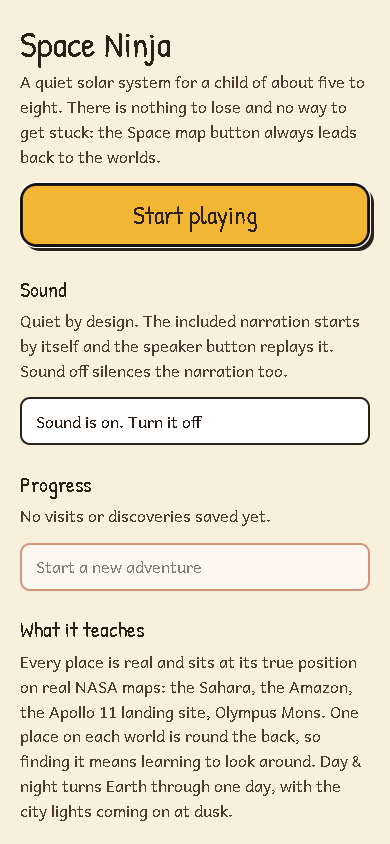</a><figcaption>phone · splash</figcaption></figure><figure class="shot shot--tablet"><a href="shots/tablet-a01-splash.png" target="_blank" rel="noopener">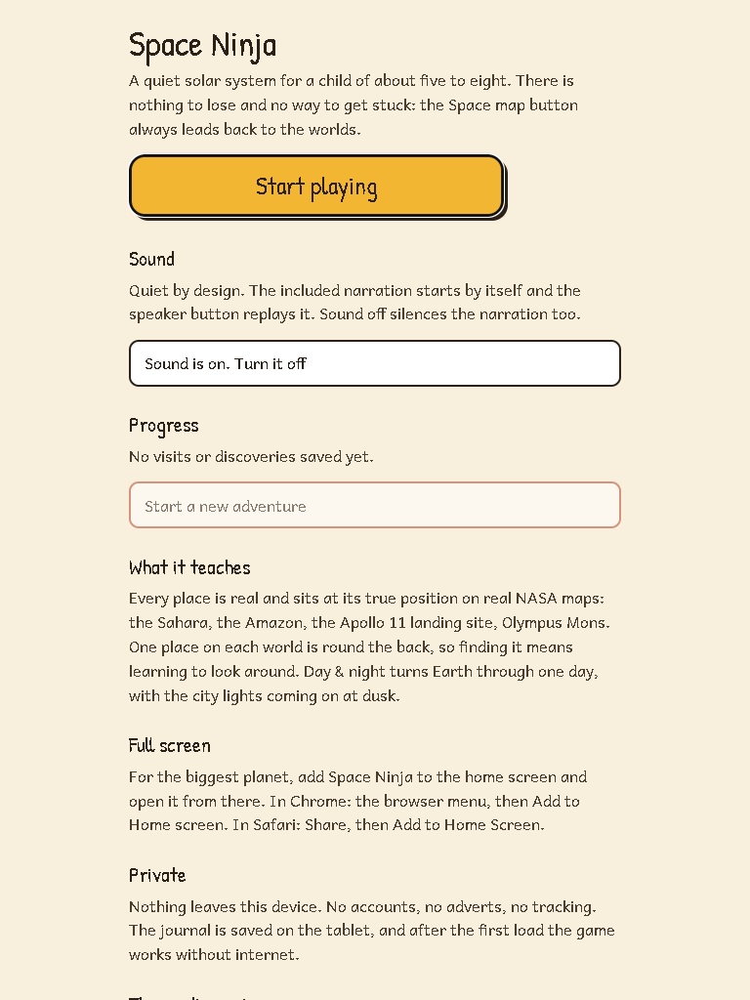</a><figcaption>tablet · splash</figcaption></figure></div></div>
</section>
<section class="state" id="s2">
  <header class="state__head"><span class="state__n">2</span><h3>Space map, first time</h3><span class="chip chip--clear">clear</span></header>
  <p class="state__why">One gold card, read by colour. Nothing moves, and the ship points elsewhere.</p>
  <dl class="facts">
    <div><dt>What changed</dt><dd>Space with Earth and the Moon; five paper cards; Earth’s card gold with a paper ring; a pill “Tap Earth”.</dd></div>
    <div><dt>How a child can tell</dt><dd>The gold card is the one coloured thing. Mars and Saturn are dashed with padlocks.</dd></div>
    <div><dt>What they can do next</dt><dd>Tap Earth (any unlocked card works).</dd></div>
    <div><dt>How the next step is shown without reading</dt><dd>Gold card plus ring (static); voice “You can fly to Earth. Tap it.” The parked ship points at the Moon, not Earth (main.ts aims at the Moon whenever Earth is suggested).</dd></div>
  </dl>
  <div class="strip"><div class="pair"><figure class="shot shot--phone"><a href="shots/phone-a02-map-first.png" target="_blank" rel="noopener">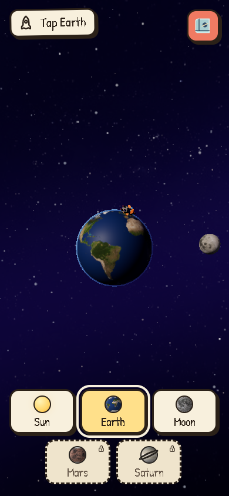</a><figcaption>phone · map first</figcaption></figure><figure class="shot shot--tablet"><a href="shots/tablet-a02-map-first.png" target="_blank" rel="noopener"></a><figcaption>tablet · map first</figcaption></figure></div></div>
</section>
<section class="state" id="s3">
  <header class="state__head"><span class="state__n">3</span><h3>Tapping a locked world</h3><span class="chip chip--unclear">unclear</span></header>
  <p class="state__why">“No” is shown; “do this instead” is only said.</p>
  <dl class="facts">
    <div><dt>What changed</dt><dd>Mars card shakes; pill becomes padlock + “Visit The Moon first”; voice “Not yet. You can visit the Moon first.” After 2.6 s the pill returns to “Tap Earth”.</dd></div>
    <div><dt>How a child can tell</dt><dd>The shake and padlock say “no”.</dd></div>
    <div><dt>What they can do next</dt><dd>Go to the Moon first.</dd></div>
    <div><dt>How the next step is shown without reading</dt><dd>Only in words. The Moon card is not highlighted or pictured; gold stays on Earth.</dd></div>
  </dl>
  <div class="strip"><div class="pair"><figure class="shot shot--phone"><a href="shots/phone-a03-locked-tap.png" target="_blank" rel="noopener">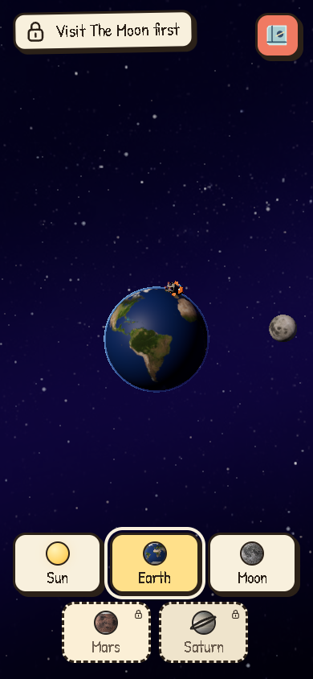</a><figcaption>phone · locked tap</figcaption></figure><figure class="shot shot--tablet"><a href="shots/tablet-a03-locked-tap.png" target="_blank" rel="noopener">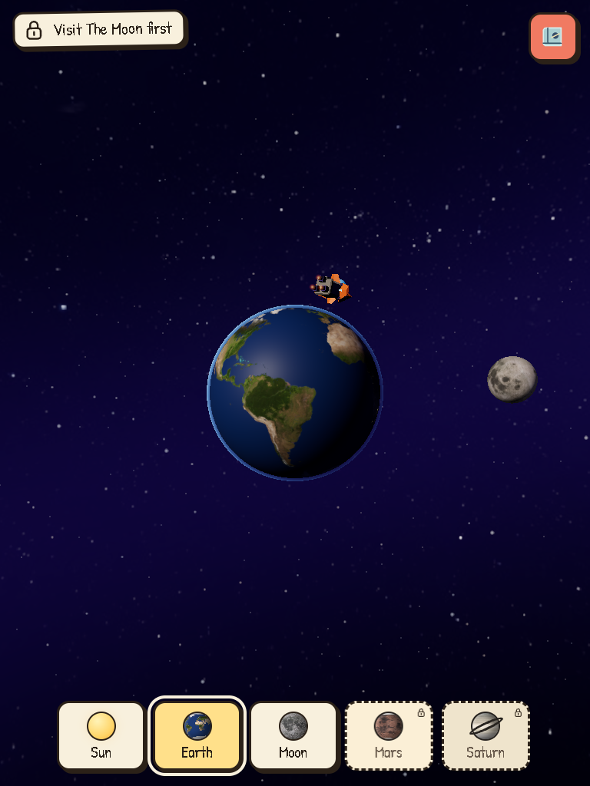</a><figcaption>tablet · locked tap</figcaption></figure></div><div class="pair"><figure class="shot shot--phone"><a href="shots/phone-a04-locked-after.png" target="_blank" rel="noopener">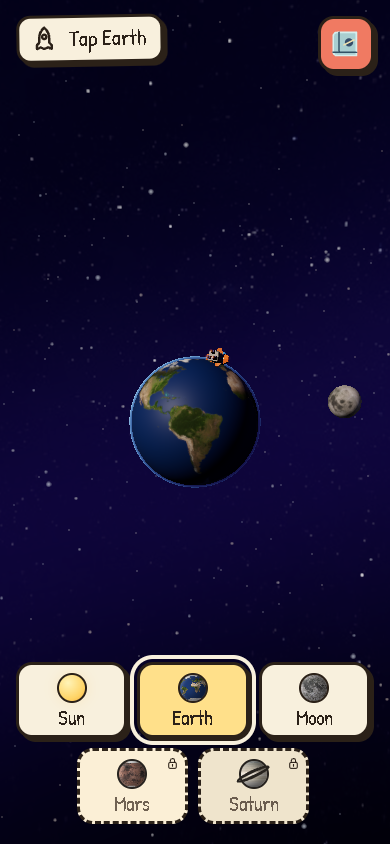</a><figcaption>phone · locked after</figcaption></figure><figure class="shot shot--tablet"><a href="shots/tablet-a04-locked-after.png" target="_blank" rel="noopener">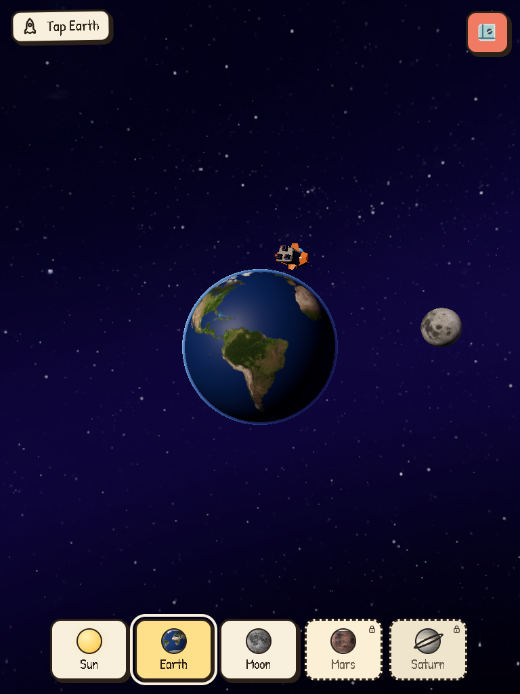</a><figcaption>tablet · locked after</figcaption></figure></div></div>
</section>
<section class="state" id="s4">
  <header class="state__head"><span class="state__n">4</span><h3>Tapping empty space (a miss)</h3><span class="chip chip--clear">clear</span></header>
  <p class="state__why">Acknowledged without punishment; faint on a busy star field.</p>
  <dl class="facts">
    <div><dt>What changed</dt><dd>A faint ring ripples where the finger landed.</dd></div>
    <div><dt>How a child can tell</dt><dd>Small echo: the game heard the tap.</dd></div>
    <div><dt>What they can do next</dt><dd>Tap a card or a world.</dd></div>
    <div><dt>How the next step is shown without reading</dt><dd>The echo only; nothing points at the gold card.</dd></div>
  </dl>
  <div class="strip"><div class="pair"><figure class="shot shot--phone"><a href="shots/phone-a05-miss.png" target="_blank" rel="noopener">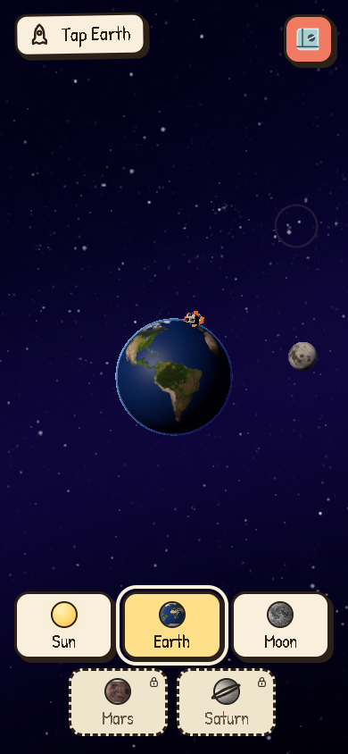</a><figcaption>phone · miss</figcaption></figure><figure class="shot shot--tablet"><a href="shots/tablet-a05-miss.png" target="_blank" rel="noopener">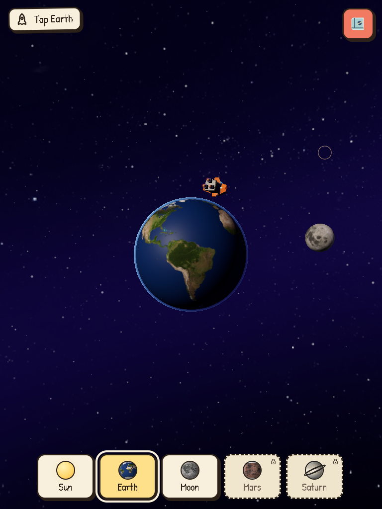</a><figcaption>tablet · miss</figcaption></figure></div></div>
</section>
<section class="state" id="s5">
  <header class="state__head"><span class="state__n">5</span><h3>Flight</h3><span class="chip chip--clear">clear</span></header>
  <p class="state__why">Short, nothing to do. The lone journal button is the only control and leads away from the flight.</p>
  <dl class="facts">
    <div><dt>What changed</dt><dd>All controls vanish except the journal button; the ship flies, the destination grows. Seven seconds on a real device.</dd></div>
    <div><dt>How a child can tell</dt><dd>The ship and the world getting bigger.</dd></div>
    <div><dt>What they can do next</dt><dd>Watch; nothing to do.</dd></div>
    <div><dt>How the next step is shown without reading</dt><dd>Motion. No picture of the destination while flying; the journal button stays live in the corner.</dd></div>
  </dl>
  <div class="strip"><div class="pair"><figure class="shot shot--phone"><a href="shots/phone-h01-flight-start.png" target="_blank" rel="noopener">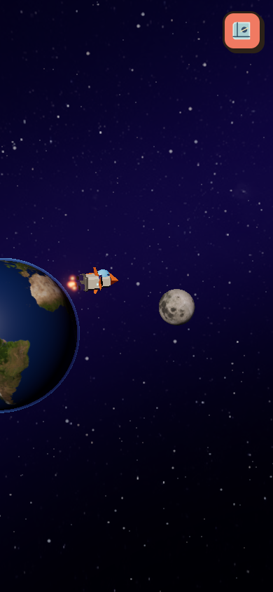</a><figcaption>phone · flight start</figcaption></figure><figure class="shot shot--tablet"><a href="shots/tablet-h01-flight-start.png" target="_blank" rel="noopener">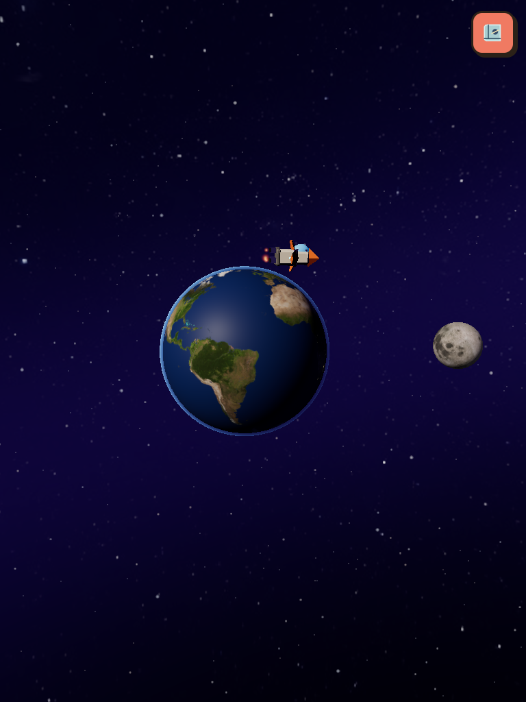</a><figcaption>tablet · flight start</figcaption></figure></div><div class="pair"><figure class="shot shot--phone"><a href="shots/phone-h02-flight-mid.png" target="_blank" rel="noopener">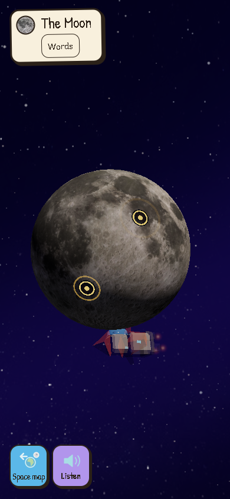</a><figcaption>phone · flight mid</figcaption></figure><figure class="shot shot--tablet"><a href="shots/tablet-h02-flight-mid.png" target="_blank" rel="noopener"></a><figcaption>tablet · flight mid</figcaption></figure></div><div class="pair"><figure class="shot shot--phone"><a href="shots/phone-h03-flight-landed.png" target="_blank" rel="noopener">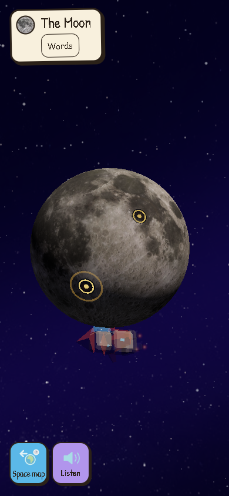</a><figcaption>phone · flight landed</figcaption></figure><figure class="shot shot--tablet"><a href="shots/tablet-h03-flight-landed.png" target="_blank" rel="noopener">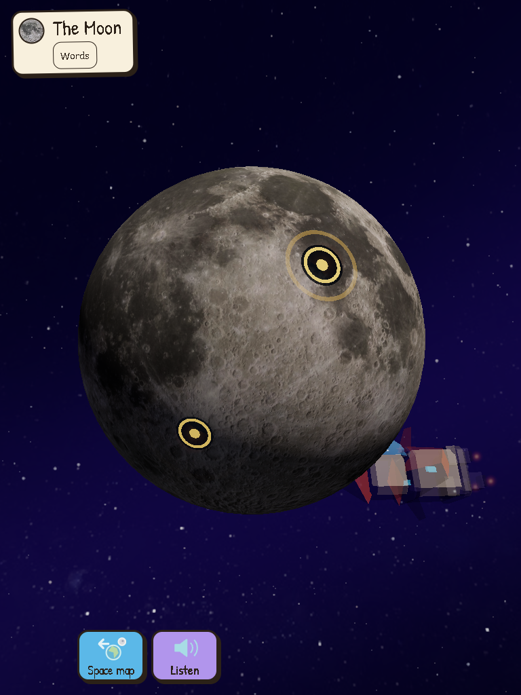</a><figcaption>tablet · flight landed</figcaption></figure></div></div>
</section>
<section class="state" id="s6">
  <header class="state__head"><span class="state__n">6</span><h3>Earth arrival: Turn Earth or Find places</h3><span class="chip chip--unclear">unclear</span></header>
  <p class="state__why">Two equal invitations; which first is only in the heading text and the voice.</p>
  <dl class="facts">
    <div><dt>What changed</dt><dd>Heading “Earth / Make night. Bring back morning.” Row: Space map, Turn Earth (green), Find places (yellow). Gold places are hidden.</dd></div>
    <div><dt>How a child can tell</dt><dd>Two big bright buttons appear.</dd></div>
    <div><dt>What they can do next</dt><dd>Turn Earth or Find places.</dd></div>
    <div><dt>How the next step is shown without reading</dt><dd>Pictures on both (Earth with a sun, a target). Turn Earth has the stronger outline; Find places is the same yellow as the old gold card.</dd></div>
  </dl>
  <div class="strip"><div class="pair"><figure class="shot shot--phone"><a href="shots/phone-b01-earth-welcome.png" target="_blank" rel="noopener">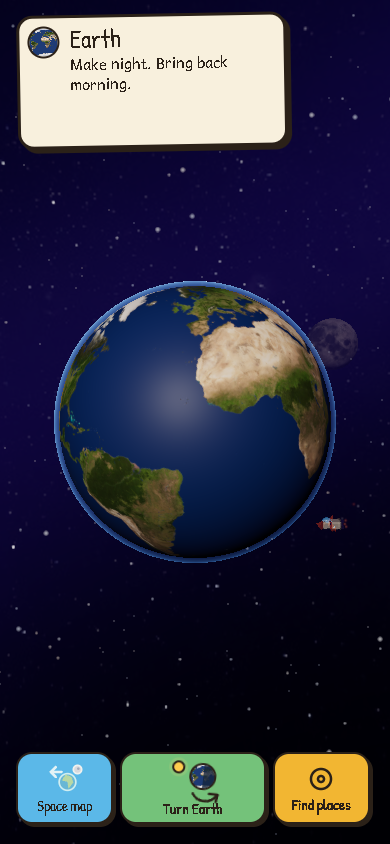</a><figcaption>phone · earth welcome</figcaption></figure><figure class="shot shot--tablet"><a href="shots/tablet-b01-earth-welcome.png" target="_blank" rel="noopener">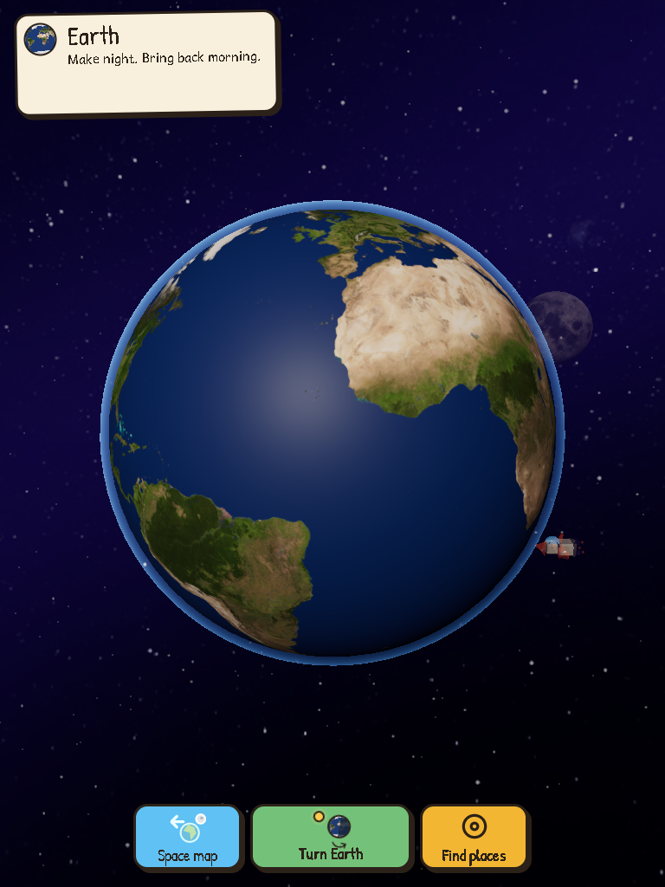</a><figcaption>tablet · earth welcome</figcaption></figure></div><div class="pair"><figure class="shot shot--phone"><a href="shots/phone-b02-earth-welcome-later.png" target="_blank" rel="noopener"></a><figcaption>phone · earth welcome later</figcaption></figure><figure class="shot shot--tablet"><a href="shots/tablet-b02-earth-welcome-later.png" target="_blank" rel="noopener"></a><figcaption>tablet · earth welcome later</figcaption></figure></div></div>
</section>
<section class="state" id="s7">
  <header class="state__head"><span class="state__n">7</span><h3>Earth bedtime spin</h3><span class="chip chip--unclear">unclear</span></header>
  <p class="state__why">The toy reads well; finishing it has no visible “you did it”.</p>
  <dl class="facts">
    <div><dt>What changed</dt><dd>Full-screen toy: Earth from above, house, clock, Turn Earth. Night: windows light, “Night-time. Bedtime!”. Morning: “Daytime at your house”, “1 turn = 1 day”.</dd></div>
    <div><dt>How a child can tell</dt><dd>The house going dark and light again; the clock.</dd></div>
    <div><dt>What they can do next</dt><dd>Keep turning, or the blue back arrow.</dd></div>
    <div><dt>How the next step is shown without reading</dt><dd>The round trip ends looking like the start. Only the voice says “Morning again! You can fly to the Moon next.”</dd></div>
  </dl>
  <div class="strip"><div class="pair"><figure class="shot shot--phone"><a href="shots/phone-b03-bedtime-open.png" target="_blank" rel="noopener">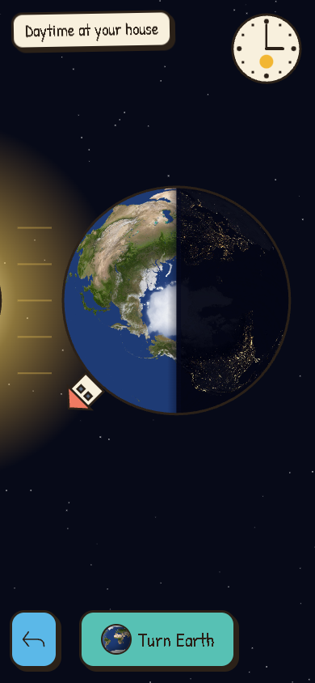</a><figcaption>phone · bedtime open</figcaption></figure><figure class="shot shot--tablet"><a href="shots/tablet-b03-bedtime-open.png" target="_blank" rel="noopener">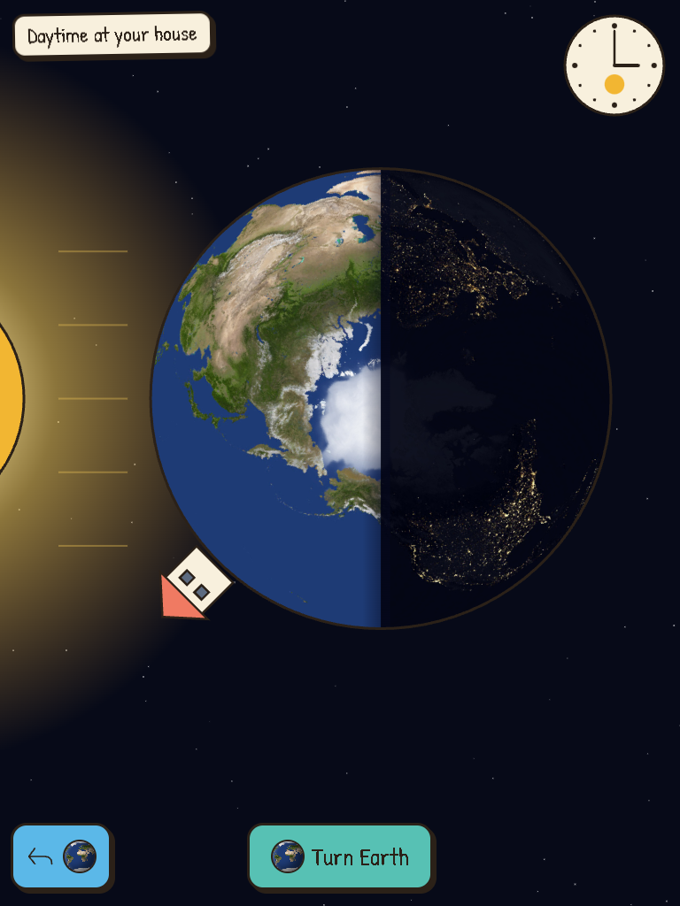</a><figcaption>tablet · bedtime open</figcaption></figure></div><div class="pair"><figure class="shot shot--phone"><a href="shots/phone-b04-bedtime-night.png" target="_blank" rel="noopener">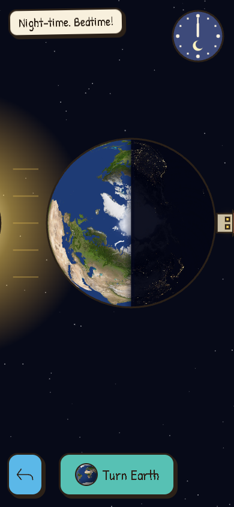</a><figcaption>phone · bedtime night</figcaption></figure><figure class="shot shot--tablet"><a href="shots/tablet-b04-bedtime-night.png" target="_blank" rel="noopener">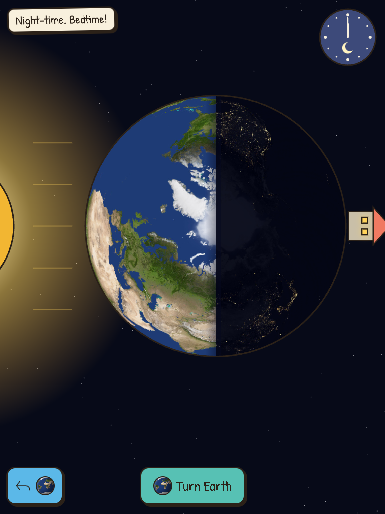</a><figcaption>tablet · bedtime night</figcaption></figure></div><div class="pair"><figure class="shot shot--phone"><a href="shots/phone-b05-bedtime-morning.png" target="_blank" rel="noopener">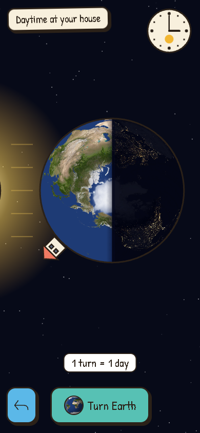</a><figcaption>phone · bedtime morning</figcaption></figure><figure class="shot shot--tablet"><a href="shots/tablet-b05-bedtime-morning.png" target="_blank" rel="noopener">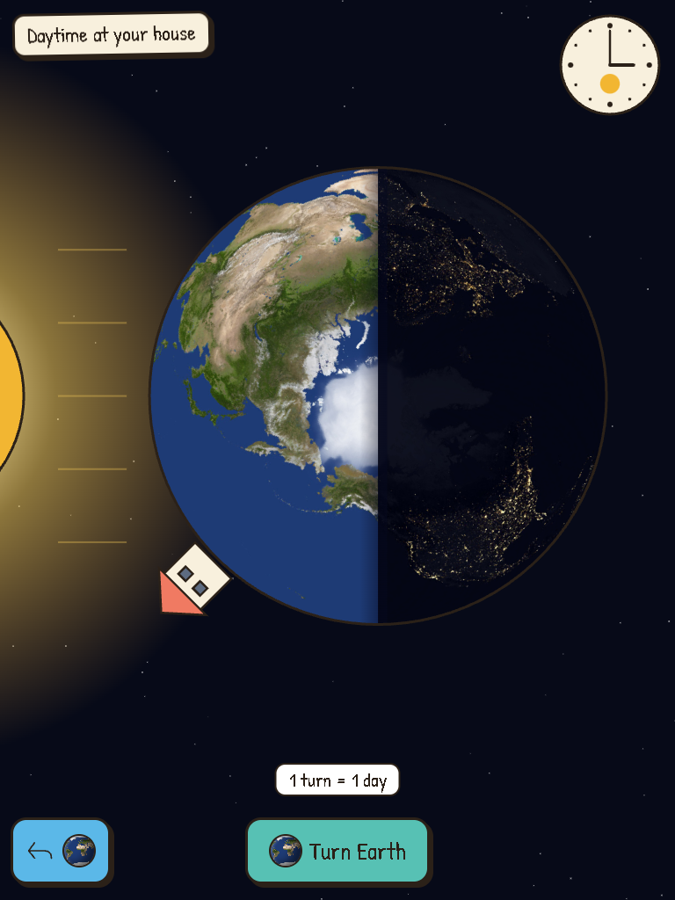</a><figcaption>tablet · bedtime morning</figcaption></figure></div></div>
</section>
<section class="state" id="s8">
  <header class="state__head"><span class="state__n">8</span><h3>Back on Earth after the spin (first visit)</h3><span class="chip chip--confusing">confusing</span></header>
  <p class="state__why">The next-step ring points at the exit while the task is unfinished.</p>
  <dl class="facts">
    <div><dt>What changed</dt><dd>Gold places appear, a three-dot counter top right, and Space map gains the paper “next step” ring (<code>is-map-next</code>).</dd></div>
    <div><dt>How a child can tell</dt><dd>Gold rings on Earth; the ringed Space map button.</dd></div>
    <div><dt>What they can do next</dt><dd>Find the gold places, says the hunt. Leave, says the ring.</dd></div>
    <div><dt>How the next step is shown without reading</dt><dd>Both at once.</dd></div>
  </dl>
  <div class="strip"><div class="pair"><figure class="shot shot--phone"><a href="shots/phone-b06-earth-after-bedtime.png" target="_blank" rel="noopener"></a><figcaption>phone · earth after bedtime</figcaption></figure><figure class="shot shot--tablet"><a href="shots/tablet-b06-earth-after-bedtime.png" target="_blank" rel="noopener">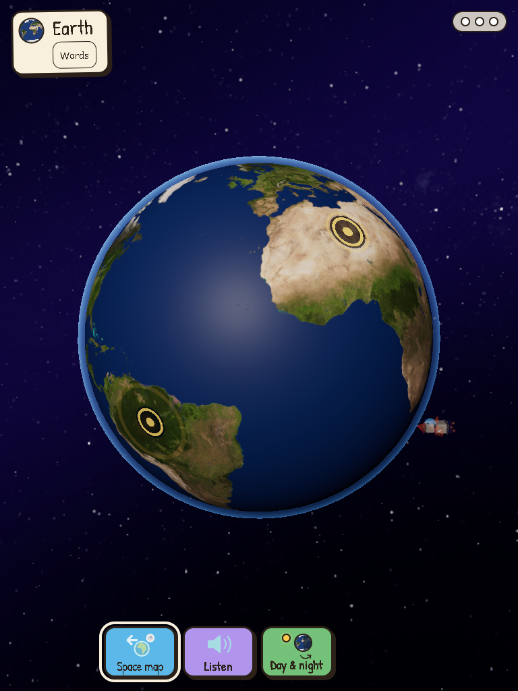</a><figcaption>tablet · earth after bedtime</figcaption></figure></div></div>
</section>
<section class="state" id="s9">
  <header class="state__head"><span class="state__n">9</span><h3>A find and its postcard</h3><span class="chip chip--clear">clear</span></header>
  <p class="state__why">The strongest moment in the game. The find label at the finger is hidden by the postcard straight away.</p>
  <dl class="facts">
    <div><dt>What changed</dt><dd>Big tilted postcard: name, photo, one line, “1 / 3”, “Saved to your journal”, Keep exploring. After closing, one counter dot fills.</dd></div>
    <div><dt>How a child can tell</dt><dd>The photo of the place, the count.</dd></div>
    <div><dt>What they can do next</dt><dd>Keep exploring (picture of the world) or X.</dd></div>
    <div><dt>How the next step is shown without reading</dt><dd>Picture and colour; the counter at the top fills.</dd></div>
  </dl>
  <div class="strip"><div class="pair"><figure class="shot shot--phone"><a href="shots/phone-b08-postcard1.png" target="_blank" rel="noopener">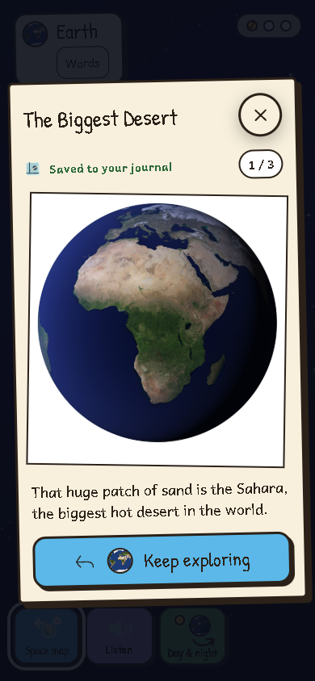</a><figcaption>phone · postcard1</figcaption></figure><figure class="shot shot--tablet"><a href="shots/tablet-b08-postcard1.png" target="_blank" rel="noopener">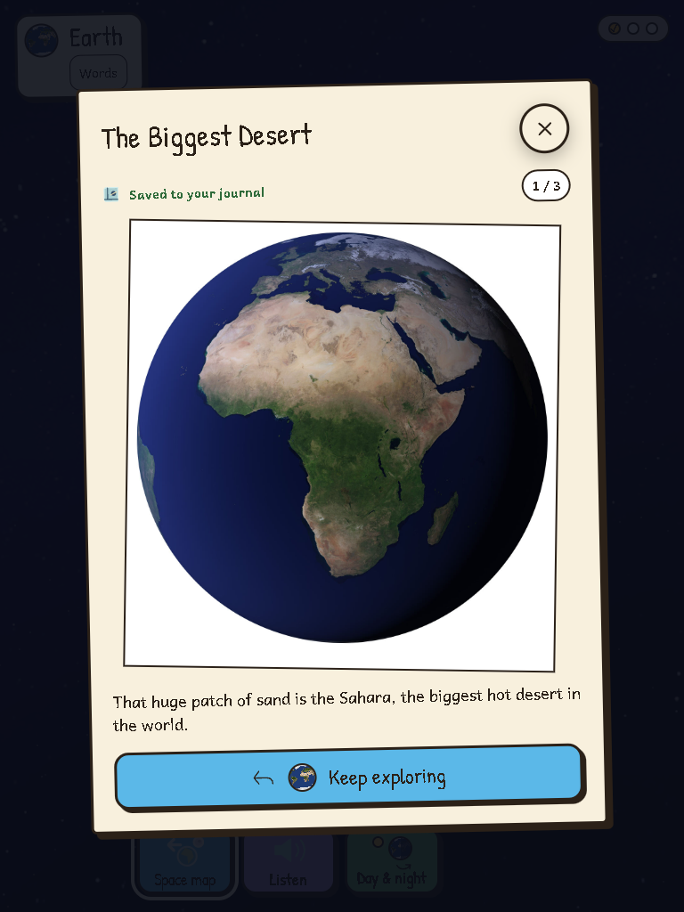</a><figcaption>tablet · postcard1</figcaption></figure></div><div class="pair"><figure class="shot shot--phone"><a href="shots/phone-b09-after-postcard1.png" target="_blank" rel="noopener">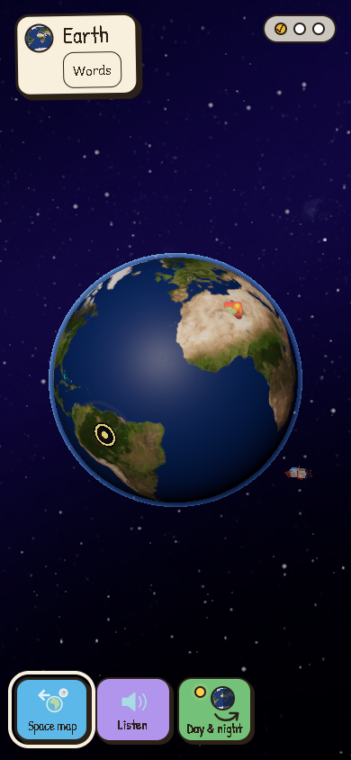</a><figcaption>phone · after postcard1</figcaption></figure><figure class="shot shot--tablet"><a href="shots/tablet-b09-after-postcard1.png" target="_blank" rel="noopener"></a><figcaption>tablet · after postcard1</figcaption></figure></div><div class="pair"><figure class="shot shot--phone"><a href="shots/phone-b10-after-find2.png" target="_blank" rel="noopener">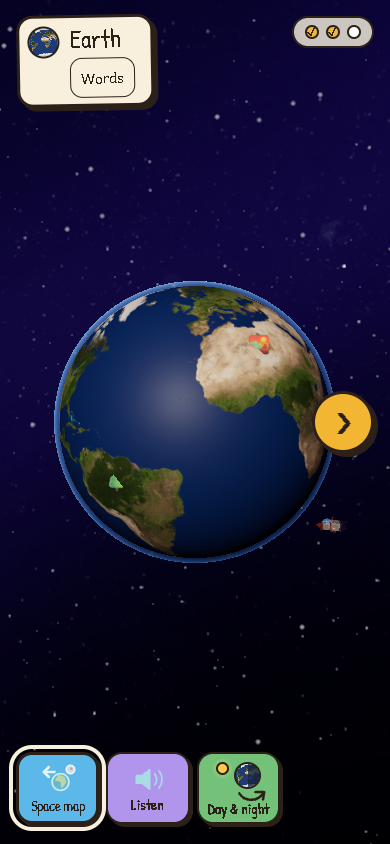</a><figcaption>phone · after find2</figcaption></figure><figure class="shot shot--tablet"><a href="shots/tablet-b10-after-find2.png" target="_blank" rel="noopener">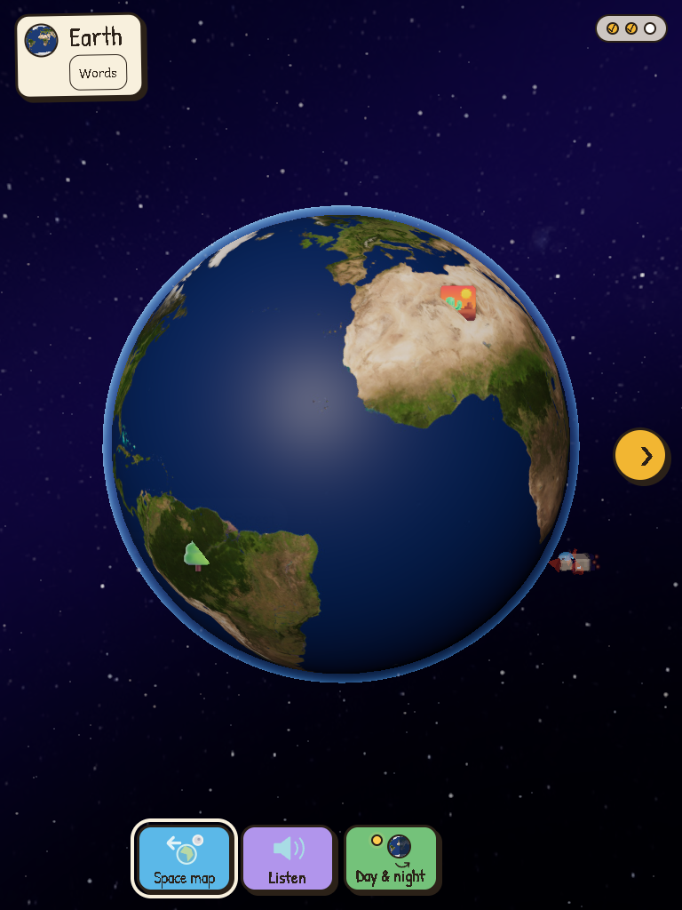</a><figcaption>tablet · after find2</figcaption></figure></div></div>
</section>
<section class="state" id="s10">
  <header class="state__head"><span class="state__n">10</span><h3>Third find on a world without a toy (Earth)</h3><span class="chip chip--unclear">unclear</span></header>
  <p class="state__why">Ring and voice disagree; two buttons arrive at once.</p>
  <dl class="facts">
    <div><dt>What changed</dt><dd>Postcard “3 / 3”. On close: counter disappears, Day & night and Journal pop in, Journal ringed, heading “Three found this trip! See your journal.”</dd></div>
    <div><dt>How a child can tell</dt><dd>Two new buttons; the ring on Journal.</dd></div>
    <div><dt>What they can do next</dt><dd>Journal, says the ring. “Fly home and pick another world”, says the voice.</dd></div>
    <div><dt>How the next step is shown without reading</dt><dd>Ring on Journal only. No sticker, nothing points at Space map.</dd></div>
  </dl>
  <div class="strip"><div class="pair"><figure class="shot shot--phone"><a href="shots/phone-b11-postcard3.png" target="_blank" rel="noopener">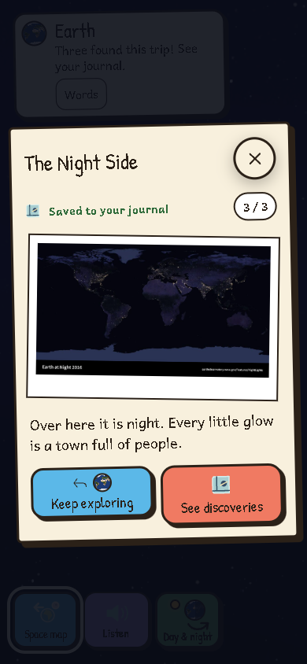</a><figcaption>phone · postcard3</figcaption></figure><figure class="shot shot--tablet"><a href="shots/tablet-b11-postcard3.png" target="_blank" rel="noopener">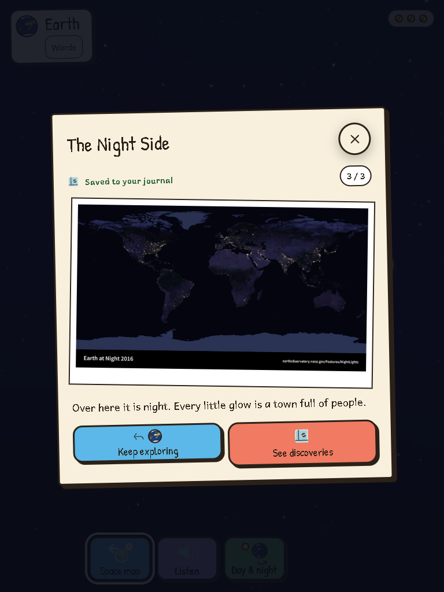</a><figcaption>tablet · postcard3</figcaption></figure></div><div class="pair"><figure class="shot shot--phone"><a href="shots/phone-b12-after-find3.png" target="_blank" rel="noopener">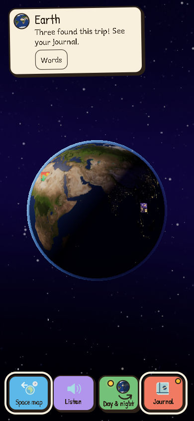</a><figcaption>phone · after find3</figcaption></figure><figure class="shot shot--tablet"><a href="shots/tablet-b12-after-find3.png" target="_blank" rel="noopener">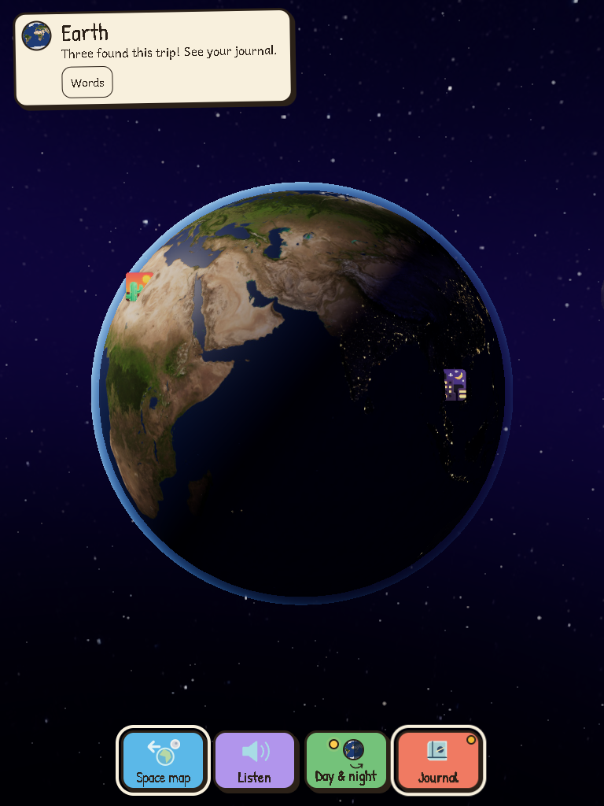</a><figcaption>tablet · after find3</figcaption></figure></div><div class="pair"><figure class="shot shot--phone"><a href="shots/phone-b13-after-find3-later.png" target="_blank" rel="noopener">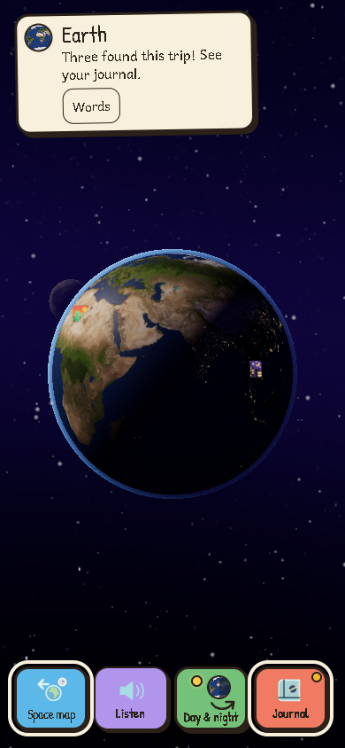</a><figcaption>phone · after find3 later</figcaption></figure><figure class="shot shot--tablet"><a href="shots/tablet-b13-after-find3-later.png" target="_blank" rel="noopener">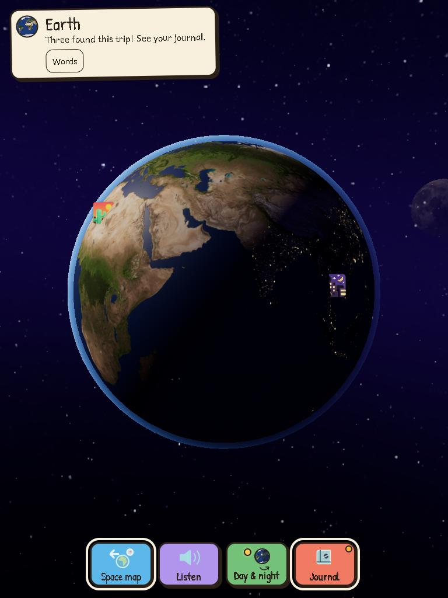</a><figcaption>tablet · after find3 later</figcaption></figure></div></div>
</section>
<section class="state" id="s11">
  <header class="state__head"><span class="state__n">11</span><h3>Journal open and close</h3><span class="chip chip--unclear">unclear</span></header>
  <p class="state__why">A finished visit looks half empty; the way on appears only after a detour.</p>
  <dl class="facts">
    <div><dt>What changed</dt><dd>Paper book: Earth 3/6, three photos and three dashed “Still to find” tiles. On close the ring moves to Space map, heading “Choose your next trip on the Space map.”</dd></div>
    <div><dt>How a child can tell</dt><dd>Photos of the places found; empty tiles.</dd></div>
    <div><dt>What they can do next</dt><dd>Keep exploring, then Space map.</dd></div>
    <div><dt>How the next step is shown without reading</dt><dd>The ring moves to Space map, but only after the journal.</dd></div>
  </dl>
  <div class="strip"><div class="pair"><figure class="shot shot--phone"><a href="shots/phone-b14-journal.png" target="_blank" rel="noopener">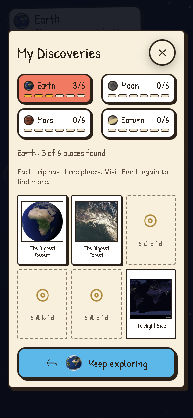</a><figcaption>phone · journal</figcaption></figure><figure class="shot shot--tablet"><a href="shots/tablet-b14-journal.png" target="_blank" rel="noopener">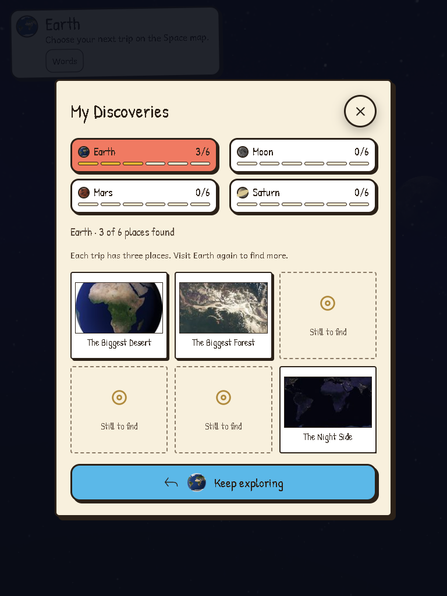</a><figcaption>tablet · journal</figcaption></figure></div><div class="pair"><figure class="shot shot--phone"><a href="shots/phone-b15-after-journal.png" target="_blank" rel="noopener"></a><figcaption>phone · after journal</figcaption></figure><figure class="shot shot--tablet"><a href="shots/tablet-b15-after-journal.png" target="_blank" rel="noopener">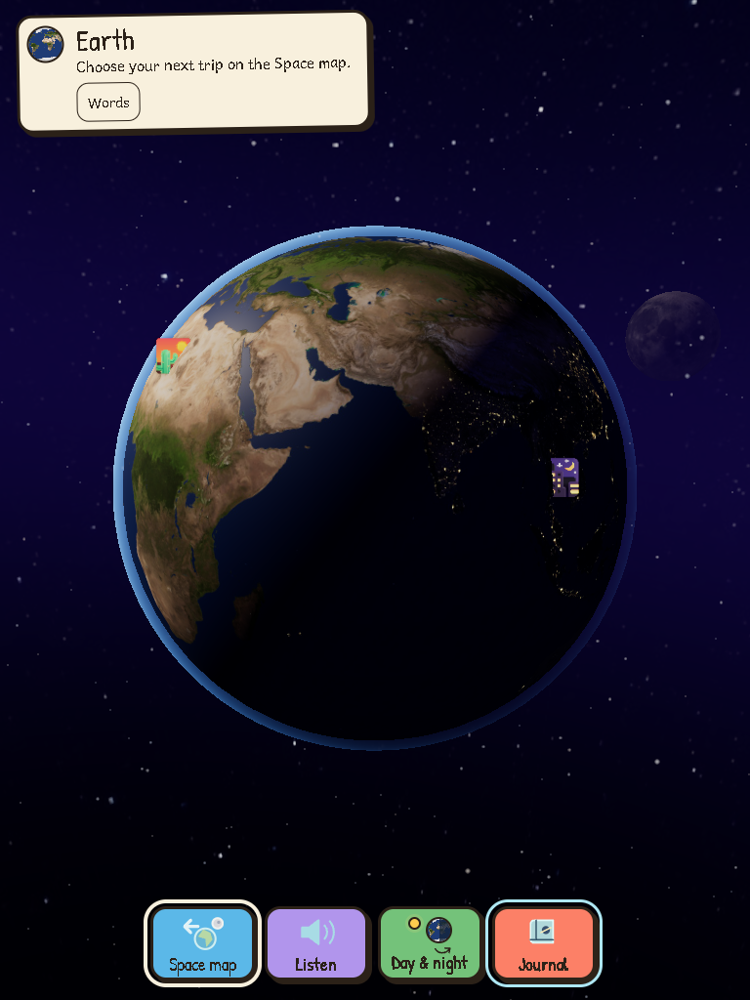</a><figcaption>tablet · after journal</figcaption></figure></div></div>
</section>
<section class="state" id="s12">
  <header class="state__head"><span class="state__n">12</span><h3>Third find on a world with a toy: the toy pops in</h3><span class="chip chip--clear">clear</span></header>
  <p class="state__why">The best state change in the game: one new thing, shown and said. Reduced motion drops the pop.</p>
  <dl class="facts">
    <div><dt>What changed</dt><dd>After the third postcard closes, the toy button pops into the fourth cell with a paper ring; heading “Three found! Now try Jump.”; voice “Now you can jump on the Moon!”</dd></div>
    <div><dt>How a child can tell</dt><dd>A new coloured button pops in with a ring.</dd></div>
    <div><dt>What they can do next</dt><dd>Press the toy.</dd></div>
    <div><dt>How the next step is shown without reading</dt><dd>Pop, colour, ring, picture, voice all agree.</dd></div>
  </dl>
  <div class="strip"><div class="pair"><figure class="shot shot--phone"><a href="shots/phone-d03-toy-popping.png" target="_blank" rel="noopener">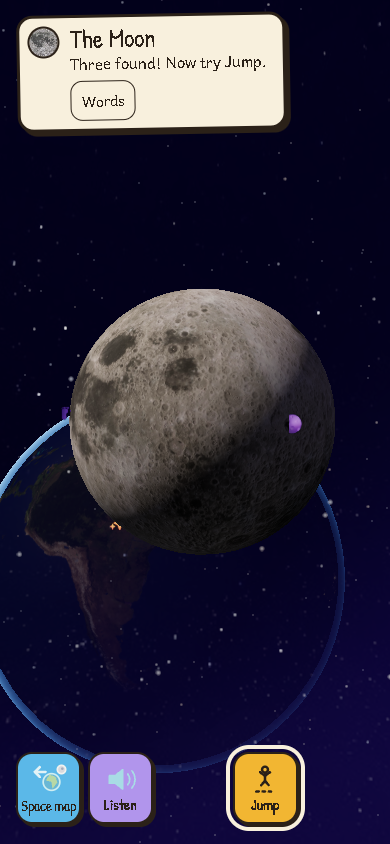</a><figcaption>phone · toy popping</figcaption></figure><figure class="shot shot--tablet"><a href="shots/tablet-d03-toy-popping.png" target="_blank" rel="noopener">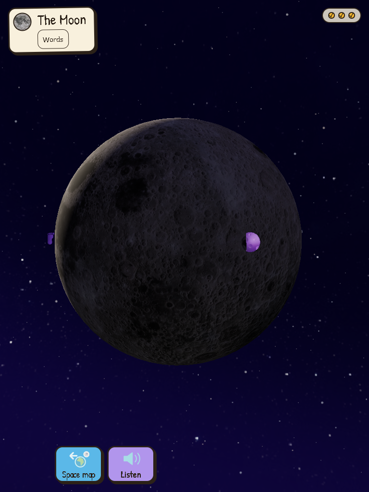</a><figcaption>tablet · toy popping</figcaption></figure></div><div class="pair"><figure class="shot shot--phone"><a href="shots/phone-d04-toy-next.png" target="_blank" rel="noopener">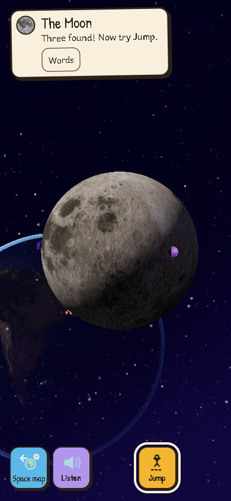</a><figcaption>phone · toy next</figcaption></figure><figure class="shot shot--tablet"><a href="shots/tablet-d04-toy-next.png" target="_blank" rel="noopener">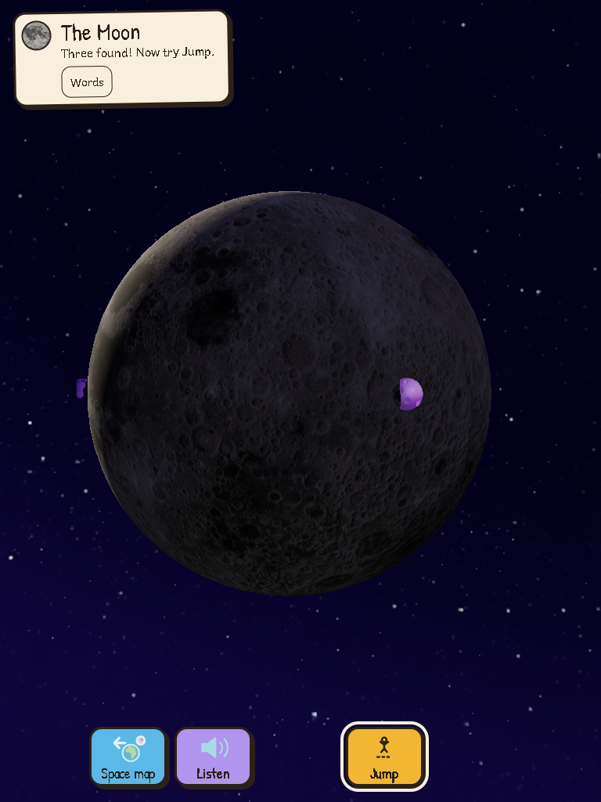</a><figcaption>tablet · toy next</figcaption></figure></div><div class="pair"><figure class="shot shot--phone"><a href="shots/phone-f02-mars-toy-next.png" target="_blank" rel="noopener">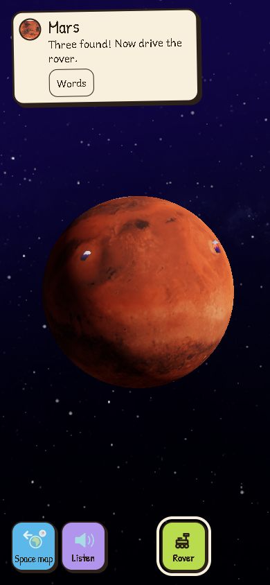</a><figcaption>phone · mars toy next</figcaption></figure><figure class="shot shot--tablet"><a href="shots/tablet-f02-mars-toy-next.png" target="_blank" rel="noopener">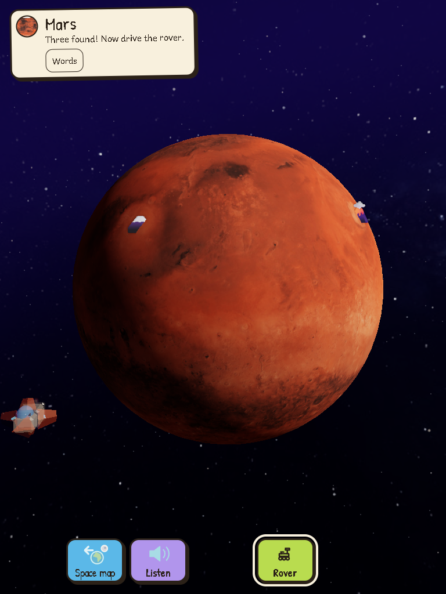</a><figcaption>tablet · mars toy next</figcaption></figure></div><div class="pair"><figure class="shot shot--phone"><a href="shots/phone-g04-saturn-toy-next.png" target="_blank" rel="noopener">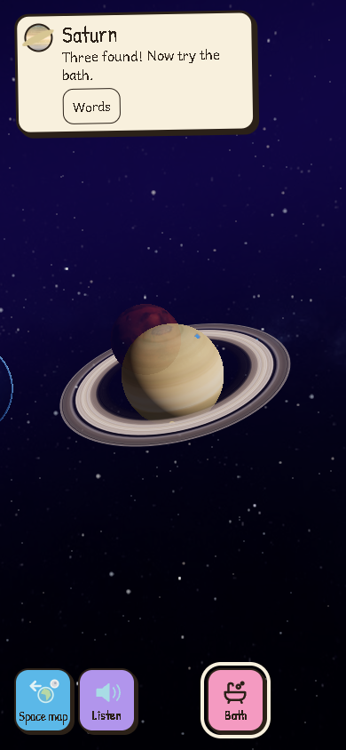</a><figcaption>phone · saturn toy next</figcaption></figure><figure class="shot shot--tablet"><a href="shots/tablet-g04-saturn-toy-next.png" target="_blank" rel="noopener">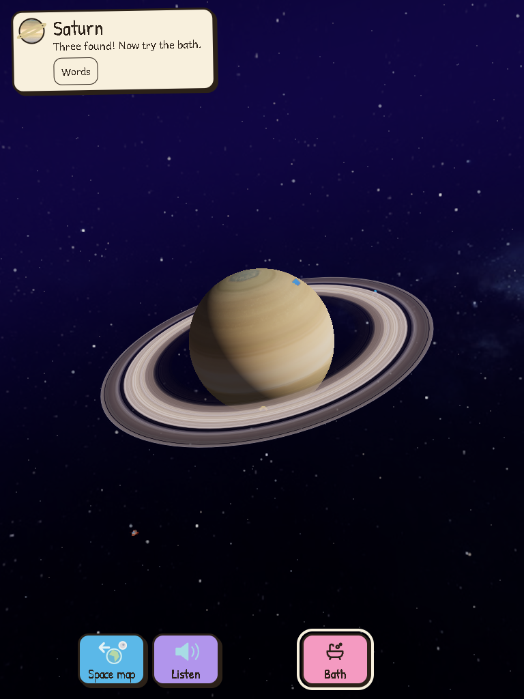</a><figcaption>tablet · saturn toy next</figcaption></figure></div></div>
</section>
<section class="state" id="s13">
  <header class="state__head"><span class="state__n">13</span><h3>Moon jump</h3><span class="chip chip--clear">clear</span></header>
  <p class="state__why">One verb, the answer is visible.</p>
  <dl class="facts">
    <div><dt>What changed</dt><dd>Split screen, Earth and Moon astronauts, Jump!; after a jump, a height marker and “Same jump! On the Moon you fly over your own head.”</dd></div>
    <div><dt>How a child can tell</dt><dd>The Moon astronaut goes much higher.</dd></div>
    <div><dt>What they can do next</dt><dd>Jump again, or back arrow.</dd></div>
    <div><dt>How the next step is shown without reading</dt><dd>Side-by-side picture.</dd></div>
  </dl>
  <div class="strip"><div class="pair"><figure class="shot shot--phone"><a href="shots/phone-d05-jump-open.png" target="_blank" rel="noopener">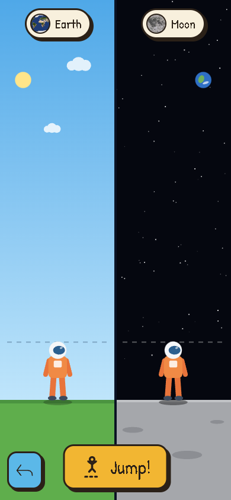</a><figcaption>phone · jump open</figcaption></figure><figure class="shot shot--tablet"><a href="shots/tablet-d05-jump-open.png" target="_blank" rel="noopener">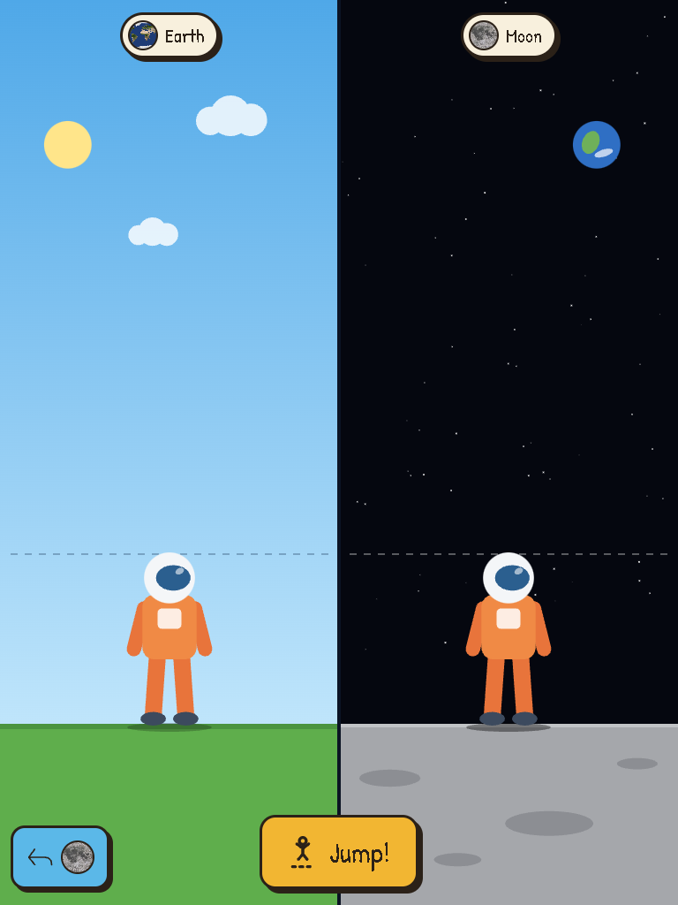</a><figcaption>tablet · jump open</figcaption></figure></div><div class="pair"><figure class="shot shot--phone"><a href="shots/phone-d06-jump-mid.png" target="_blank" rel="noopener">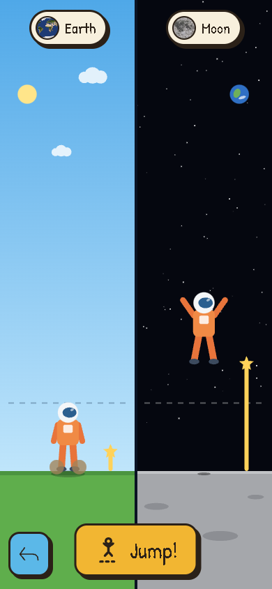</a><figcaption>phone · jump mid</figcaption></figure><figure class="shot shot--tablet"><a href="shots/tablet-d06-jump-mid.png" target="_blank" rel="noopener">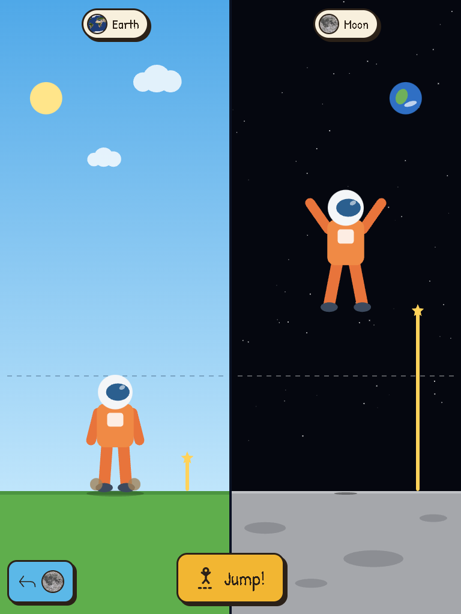</a><figcaption>tablet · jump mid</figcaption></figure></div><div class="pair"><figure class="shot shot--phone"><a href="shots/phone-d07-jump-after.png" target="_blank" rel="noopener">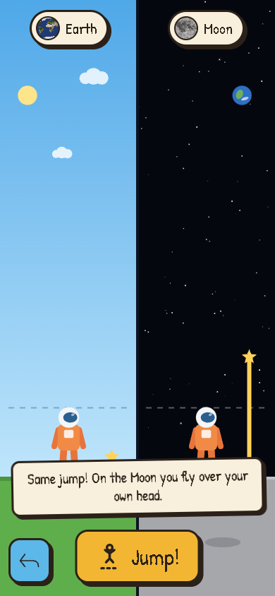</a><figcaption>phone · jump after</figcaption></figure><figure class="shot shot--tablet"><a href="shots/tablet-d07-jump-after.png" target="_blank" rel="noopener"></a><figcaption>tablet · jump after</figcaption></figure></div></div>
</section>
<section class="state" id="s14">
  <header class="state__head"><span class="state__n">14</span><h3>After the toy</h3><span class="chip chip--unclear">unclear</span></header>
  <p class="state__why">A detour before the way on is shown; five buttons now.</p>
  <dl class="facts">
    <div><dt>What changed</dt><dd>Day & night and Journal pop in together; Journal ringed; heading “Three found this trip! See your journal.”</dd></div>
    <div><dt>How a child can tell</dt><dd>Two new buttons; ring on Journal.</dd></div>
    <div><dt>What they can do next</dt><dd>Journal, then Space map.</dd></div>
    <div><dt>How the next step is shown without reading</dt><dd>Ring on Journal. Space map unringed until the journal has been opened.</dd></div>
  </dl>
  <div class="strip"><div class="pair"><figure class="shot shot--phone"><a href="shots/phone-d08-after-jump.png" target="_blank" rel="noopener"></a><figcaption>phone · after jump</figcaption></figure><figure class="shot shot--tablet"><a href="shots/tablet-d08-after-jump.png" target="_blank" rel="noopener"></a><figcaption>tablet · after jump</figcaption></figure></div><div class="pair"><figure class="shot shot--phone"><a href="shots/phone-d09-after-jump-later.png" target="_blank" rel="noopener"></a><figcaption>phone · after jump later</figcaption></figure><figure class="shot shot--tablet"><a href="shots/tablet-d09-after-jump-later.png" target="_blank" rel="noopener"></a><figcaption>tablet · after jump later</figcaption></figure></div><div class="pair"><figure class="shot shot--phone"><a href="shots/phone-f10-after-rover.png" target="_blank" rel="noopener"></a><figcaption>phone · after rover</figcaption></figure><figure class="shot shot--tablet"><a href="shots/tablet-f10-after-rover.png" target="_blank" rel="noopener"></a><figcaption>tablet · after rover</figcaption></figure></div><div class="pair"><figure class="shot shot--phone"><a href="shots/phone-g07-after-bath.png" target="_blank" rel="noopener"></a><figcaption>phone · after bath</figcaption></figure><figure class="shot shot--tablet"><a href="shots/tablet-g07-after-bath.png" target="_blank" rel="noopener"></a><figcaption>tablet · after bath</figcaption></figure></div></div>
</section>
<section class="state" id="s15">
  <header class="state__head"><span class="state__n">15</span><h3>Back on the Space map after Earth</h3><span class="chip chip--confusing">confusing</span></header>
  <p class="state__why">The playtest moment: nothing on screen marks what just happened.</p>
  <dl class="facts">
    <div><dt>What changed</dt><dd>Pull-back to the map. Gold moves from Earth’s card to the Moon’s. Pill “Tap Moon”. Voice “Back home. You can pick another world.”, then “Tap the Moon.” after 8 s idle.</dd></div>
    <div><dt>How a child can tell</dt><dd>Compare with state 2: same screen, the gold has moved one card.</dd></div>
    <div><dt>What they can do next</dt><dd>Tap the Moon.</dd></div>
    <div><dt>How the next step is shown without reading</dt><dd>Gold card only. Earth’s card shows nothing for the visit just done; no ring in the scene; the voice line does not name the Moon.</dd></div>
  </dl>
  <div class="strip"><div class="pair"><figure class="shot shot--phone"><a href="shots/phone-c01-returning.png" target="_blank" rel="noopener"></a><figcaption>phone · returning</figcaption></figure><figure class="shot shot--tablet"><a href="shots/tablet-c01-returning.png" target="_blank" rel="noopener"></a><figcaption>tablet · returning</figcaption></figure></div><div class="pair"><figure class="shot shot--phone"><a href="shots/phone-c02-map-after-earth.png" target="_blank" rel="noopener"></a><figcaption>phone · map after earth</figcaption></figure><figure class="shot shot--tablet"><a href="shots/tablet-c02-map-after-earth.png" target="_blank" rel="noopener"></a><figcaption>tablet · map after earth</figcaption></figure></div><div class="pair"><figure class="shot shot--phone"><a href="shots/phone-c03-map-after-earth-later.png" target="_blank" rel="noopener"></a><figcaption>phone · map after earth later</figcaption></figure><figure class="shot shot--tablet"><a href="shots/tablet-c03-map-after-earth-later.png" target="_blank" rel="noopener"></a><figcaption>tablet · map after earth later</figcaption></figure></div></div>
</section>
<section class="state" id="s16">
  <header class="state__head"><span class="state__n">16</span><h3>Back on the Space map, a world newly unlocked (Mars)</h3><span class="chip chip--confusing">confusing</span></header>
  <p class="state__why">Unlocking looks like any other turn of the map.</p>
  <dl class="facts">
    <div><dt>What changed</dt><dd>Mars fades in wherever its orbit has it: in these runs at the far right edge on the phone, and half behind Earth on the tablet. Its card changes from dashed + padlock to gold + ring. Pill “Mars is ready”, then “Tap Mars” after 3.6 s. Voice “Mars is ready. You can fly there.”</dd></div>
    <div><dt>How a child can tell</dt><dd>The padlock has gone and the card is gold, if the child remembers it was locked.</dd></div>
    <div><dt>What they can do next</dt><dd>Tap Mars.</dd></div>
    <div><dt>How the next step is shown without reading</dt><dd>The same gold as every suggestion before. <code>is-new</code> is set but has no style. After the fade nothing moves, glows or points; the Moon card shows nothing for the visit just done. On the phone Mars sits on the second row of cards.</dd></div>
  </dl>
  <div class="strip"><div class="pair"><figure class="shot shot--phone"><a href="shots/phone-e01-map-after-moon.png" target="_blank" rel="noopener"></a><figcaption>phone · map after moon</figcaption></figure><figure class="shot shot--tablet"><a href="shots/tablet-e01-map-after-moon.png" target="_blank" rel="noopener"></a><figcaption>tablet · map after moon</figcaption></figure></div><div class="pair"><figure class="shot shot--phone"><a href="shots/phone-e02-map-after-moon-2s.png" target="_blank" rel="noopener"></a><figcaption>phone · map after moon 2s</figcaption></figure><figure class="shot shot--tablet"><a href="shots/tablet-e02-map-after-moon-2s.png" target="_blank" rel="noopener"></a><figcaption>tablet · map after moon 2s</figcaption></figure></div><div class="pair"><figure class="shot shot--phone"><a href="shots/phone-e03-map-after-moon-6s.png" target="_blank" rel="noopener"></a><figcaption>phone · map after moon 6s</figcaption></figure><figure class="shot shot--tablet"><a href="shots/tablet-e03-map-after-moon-6s.png" target="_blank" rel="noopener"></a><figcaption>tablet · map after moon 6s</figcaption></figure></div><div class="pair"><figure class="shot shot--phone"><a href="shots/phone-e04-map-after-moon-18s.png" target="_blank" rel="noopener"></a><figcaption>phone · map after moon 18s</figcaption></figure><figure class="shot shot--tablet"><a href="shots/tablet-e04-map-after-moon-18s.png" target="_blank" rel="noopener"></a><figcaption>tablet · map after moon 18s</figcaption></figure></div></div>
</section>
<section class="state" id="s17">
  <header class="state__head"><span class="state__n">17</span><h3>A newly unlocked world, first arrival (Mars)</h3><span class="chip chip--clear">clear</span></header>
  <p class="state__why">The hunt pattern carries over.</p>
  <dl class="facts">
    <div><dt>What changed</dt><dd>Quiet arrival: name, Space map, Listen, gold rings.</dd></div>
    <div><dt>How a child can tell</dt><dd>Gold rings on a new planet.</dd></div>
    <div><dt>What they can do next</dt><dd>Tap a gold place.</dd></div>
    <div><dt>How the next step is shown without reading</dt><dd>The gold rings, the same as on the Moon.</dd></div>
  </dl>
  <div class="strip"><div class="pair"><figure class="shot shot--phone"><a href="shots/phone-e05-mars-first-arrival.png" target="_blank" rel="noopener"></a><figcaption>phone · mars first arrival</figcaption></figure><figure class="shot shot--tablet"><a href="shots/tablet-e05-mars-first-arrival.png" target="_blank" rel="noopener"></a><figcaption>tablet · mars first arrival</figcaption></figure></div><div class="pair"><figure class="shot shot--phone"><a href="shots/phone-e06-mars-first-arrival-later.png" target="_blank" rel="noopener"></a><figcaption>phone · mars first arrival later</figcaption></figure><figure class="shot shot--tablet"><a href="shots/tablet-e06-mars-first-arrival-later.png" target="_blank" rel="noopener"></a><figcaption>tablet · mars first arrival later</figcaption></figure></div><div class="pair"><figure class="shot shot--phone"><a href="shots/phone-f01-map-mars-offered.png" target="_blank" rel="noopener"></a><figcaption>phone · map mars offered</figcaption></figure><figure class="shot shot--tablet"><a href="shots/tablet-f01-map-mars-offered.png" target="_blank" rel="noopener"></a><figcaption>tablet · map mars offered</figcaption></figure></div></div>
</section>
<section class="state" id="s18">
  <header class="state__head"><span class="state__n">18</span><h3>Mars rover</h3><span class="chip chip--confusing">confusing</span></header>
  <p class="state__why">Grid steering, a delayed queue and exact parking at once; the boy was confused.</p>
  <dl class="facts">
    <div><dt>What changed</dt><dd>Earth, a clock, “really: 12 minutes”, Jezero crater grid, rover, three rocks, four lime arrows and Drill. Each press sends a glowing dot down from Earth; the rover moves when it lands, about 3 s later.</dd></div>
    <div><dt>How a child can tell</dt><dd>Dots leave Earth and the rover moves late.</dd></div>
    <div><dt>What they can do next</dt><dd>Steer to a rock, then Drill.</dd></div>
    <div><dt>How the next step is shown without reading</dt><dd>Dots carry an arrow. Drilling plain ground shows nothing; a full queue shakes the key; the caption stays on “Wait… Mars is far away!” after everything has landed. On the tablet the rover starts on the bottom row, right above Drill, and the crater’s lower edge runs behind the buttons.</dd></div>
  </dl>
  <div class="strip"><div class="pair"><figure class="shot shot--phone"><a href="shots/phone-f03-rover-open.png" target="_blank" rel="noopener"></a><figcaption>phone · rover open</figcaption></figure><figure class="shot shot--tablet"><a href="shots/tablet-f03-rover-open.png" target="_blank" rel="noopener"></a><figcaption>tablet · rover open</figcaption></figure></div><div class="pair"><figure class="shot shot--phone"><a href="shots/phone-f04-rover-first-press.png" target="_blank" rel="noopener"></a><figcaption>phone · rover first press</figcaption></figure><figure class="shot shot--tablet"><a href="shots/tablet-f04-rover-first-press.png" target="_blank" rel="noopener"></a><figcaption>tablet · rover first press</figcaption></figure></div><div class="pair"><figure class="shot shot--phone"><a href="shots/phone-f05-rover-waiting.png" target="_blank" rel="noopener"></a><figcaption>phone · rover waiting</figcaption></figure><figure class="shot shot--tablet"><a href="shots/tablet-f05-rover-waiting.png" target="_blank" rel="noopener"></a><figcaption>tablet · rover waiting</figcaption></figure></div><div class="pair"><figure class="shot shot--phone"><a href="shots/phone-f06-rover-moved.png" target="_blank" rel="noopener"></a><figcaption>phone · rover moved</figcaption></figure><figure class="shot shot--tablet"><a href="shots/tablet-f06-rover-moved.png" target="_blank" rel="noopener"></a><figcaption>tablet · rover moved</figcaption></figure></div><div class="pair"><figure class="shot shot--phone"><a href="shots/phone-f07-rover-mashed.png" target="_blank" rel="noopener"></a><figcaption>phone · rover mashed</figcaption></figure><figure class="shot shot--tablet"><a href="shots/tablet-f07-rover-mashed.png" target="_blank" rel="noopener"></a><figcaption>tablet · rover mashed</figcaption></figure></div><div class="pair"><figure class="shot shot--phone"><a href="shots/phone-f08-rover-mashed-later.png" target="_blank" rel="noopener"></a><figcaption>phone · rover mashed later</figcaption></figure><figure class="shot shot--tablet"><a href="shots/tablet-f08-rover-mashed-later.png" target="_blank" rel="noopener"></a><figcaption>tablet · rover mashed later</figcaption></figure></div><div class="pair"><figure class="shot shot--phone"><a href="shots/phone-f09-rover-settled.png" target="_blank" rel="noopener"></a><figcaption>phone · rover settled</figcaption></figure><figure class="shot shot--tablet"><a href="shots/tablet-f09-rover-settled.png" target="_blank" rel="noopener"></a><figcaption>tablet · rover settled</figcaption></figure></div></div>
</section>
<section class="state" id="s19">
  <header class="state__head"><span class="state__n">19</span><h3>Back on the Space map, Saturn unlocked</h3><span class="chip chip--unclear">unclear</span></header>
  <p class="state__why">Clearer than Mars because Saturn is big, but nothing says “new”.</p>
  <dl class="facts">
    <div><dt>What changed</dt><dd>Saturn fades in big and ringed; its card turns gold. “Saturn is ready”, then “Tap Saturn”.</dd></div>
    <div><dt>How a child can tell</dt><dd>A large new planet appears in the middle of the scene.</dd></div>
    <div><dt>What they can do next</dt><dd>Tap Saturn.</dd></div>
    <div><dt>How the next step is shown without reading</dt><dd>Saturn’s size helps; the card treatment is the same gold.</dd></div>
  </dl>
  <div class="strip"><div class="pair"><figure class="shot shot--phone"><a href="shots/phone-g01-map-after-mars.png" target="_blank" rel="noopener"></a><figcaption>phone · map after mars</figcaption></figure><figure class="shot shot--tablet"><a href="shots/tablet-g01-map-after-mars.png" target="_blank" rel="noopener"></a><figcaption>tablet · map after mars</figcaption></figure></div><div class="pair"><figure class="shot shot--phone"><a href="shots/phone-g02-map-after-mars-later.png" target="_blank" rel="noopener"></a><figcaption>phone · map after mars later</figcaption></figure><figure class="shot shot--tablet"><a href="shots/tablet-g02-map-after-mars-later.png" target="_blank" rel="noopener"></a><figcaption>tablet · map after mars later</figcaption></figure></div></div>
</section>
<section class="state" id="s20">
  <header class="state__head"><span class="state__n">20</span><h3>Saturn arrival</h3><span class="chip chip--clear">clear</span></header>
  <p class="state__why">Same pattern; the targets are small on the phone.</p>
  <dl class="facts">
    <div><dt>What changed</dt><dd>Quiet arrival over Saturn and its rings.</dd></div>
    <div><dt>How a child can tell</dt><dd>Gold places, small on the planet and rings.</dd></div>
    <div><dt>What they can do next</dt><dd>Tap a gold place.</dd></div>
    <div><dt>How the next step is shown without reading</dt><dd>Gold rings, smaller than on other worlds.</dd></div>
  </dl>
  <div class="strip"><div class="pair"><figure class="shot shot--phone"><a href="shots/phone-g03-saturn-arrival.png" target="_blank" rel="noopener"></a><figcaption>phone · saturn arrival</figcaption></figure><figure class="shot shot--tablet"><a href="shots/tablet-g03-saturn-arrival.png" target="_blank" rel="noopener"></a><figcaption>tablet · saturn arrival</figcaption></figure></div></div>
</section>
<section class="state" id="s21">
  <header class="state__head"><span class="state__n">21</span><h3>Saturn bath</h3><span class="chip chip--clear">clear</span></header>
  <p class="state__why">One verb, a visible answer.</p>
  <dl class="facts">
    <div><dt>What changed</dt><dd>A bath, a shelf of worlds, Plop!. Earth, Mars and the Moon sink; Saturn floats; “Only Saturn floats!”; Plop! becomes Again.</dd></div>
    <div><dt>How a child can tell</dt><dd>Saturn bobbing on top.</dd></div>
    <div><dt>What they can do next</dt><dd>Again, or back arrow.</dd></div>
    <div><dt>How the next step is shown without reading</dt><dd>Picture.</dd></div>
  </dl>
  <div class="strip"><div class="pair"><figure class="shot shot--phone"><a href="shots/phone-g05-bath-open.png" target="_blank" rel="noopener"></a><figcaption>phone · bath open</figcaption></figure><figure class="shot shot--tablet"><a href="shots/tablet-g05-bath-open.png" target="_blank" rel="noopener"></a><figcaption>tablet · bath open</figcaption></figure></div><div class="pair"><figure class="shot shot--phone"><a href="shots/phone-g06-bath-floating.png" target="_blank" rel="noopener"></a><figcaption>phone · bath floating</figcaption></figure><figure class="shot shot--tablet"><a href="shots/tablet-g06-bath-floating.png" target="_blank" rel="noopener"></a><figcaption>tablet · bath floating</figcaption></figure></div></div>
</section>
<section class="state" id="s22">
  <header class="state__head"><span class="state__n">22</span><h3>Space map with everything visited</h3><span class="chip chip--confusing">confusing</span></header>
  <p class="state__why">Sends the child back to a world they just finished, with no picture of why.</p>
  <dl class="facts">
    <div><dt>What changed</dt><dd>Gold returns to Mars. Pill with a journal icon “More to find · Tap Mars”.</dd></div>
    <div><dt>How a child can tell</dt><dd>A gold card, as before.</dd></div>
    <div><dt>What they can do next</dt><dd>Go back to Mars for its other three places.</dd></div>
    <div><dt>How the next step is shown without reading</dt><dd>Identical gold to a new world; only the pill’s small icon and words differ.</dd></div>
  </dl>
  <div class="strip"><div class="pair"><figure class="shot shot--phone"><a href="shots/phone-g08-map-after-saturn.png" target="_blank" rel="noopener"></a><figcaption>phone · map after saturn</figcaption></figure><figure class="shot shot--tablet"><a href="shots/tablet-g08-map-after-saturn.png" target="_blank" rel="noopener"></a><figcaption>tablet · map after saturn</figcaption></figure></div><div class="pair"><figure class="shot shot--phone"><a href="shots/phone-g09-map-after-saturn-later.png" target="_blank" rel="noopener"></a><figcaption>phone · map after saturn later</figcaption></figure><figure class="shot shot--tablet"><a href="shots/tablet-g09-map-after-saturn-later.png" target="_blank" rel="noopener"></a><figcaption>tablet · map after saturn later</figcaption></figure></div><div class="pair"><figure class="shot shot--phone"><a href="shots/phone-i01-map-before-finale.png" target="_blank" rel="noopener"></a><figcaption>phone · map before finale</figcaption></figure><figure class="shot shot--tablet"><a href="shots/tablet-i01-map-before-finale.png" target="_blank" rel="noopener"></a><figcaption>tablet · map before finale</figcaption></figure></div></div>
</section>
<section class="state" id="s23">
  <header class="state__head"><span class="state__n">23</span><h3>A revisited place, and the hunt arrow</h3><span class="chip chip--clear">clear</span></header>
  <p class="state__why">The arrow is pictured and does the turning.</p>
  <dl class="facts">
    <div><dt>What changed</dt><dd>A place found on an earlier visit only counts: no postcard. The last place round the back gets a pulsing arrow at the edge.</dd></div>
    <div><dt>How a child can tell</dt><dd>The counter fills; the arrow pulses.</dd></div>
    <div><dt>What they can do next</dt><dd>Tap the arrow to turn the world.</dd></div>
    <div><dt>How the next step is shown without reading</dt><dd>Arrow and motion.</dd></div>
  </dl>
  <div class="strip"><div class="pair"><figure class="shot shot--phone"><a href="shots/phone-i02-hunt-arrow.png" target="_blank" rel="noopener"></a><figcaption>phone · hunt arrow</figcaption></figure><figure class="shot shot--tablet"><a href="shots/tablet-i02-hunt-arrow.png" target="_blank" rel="noopener"></a><figcaption>tablet · hunt arrow</figcaption></figure></div><div class="pair"><figure class="shot shot--phone"><a href="shots/phone-i03-revisited-find.png" target="_blank" rel="noopener"></a><figcaption>phone · revisited find</figcaption></figure><figure class="shot shot--tablet"><a href="shots/tablet-i03-revisited-find.png" target="_blank" rel="noopener"></a><figcaption>tablet · revisited find</figcaption></figure></div></div>
</section>
<section class="state" id="s24">
  <header class="state__head"><span class="state__n">24</span><h3>Finale</h3><span class="chip chip--unclear">unclear</span></header>
  <p class="state__why">The party is clear; what comes after it (play on? all done?) is not shown.</p>
  <dl class="facts">
    <div><dt>What changed</dt><dd>3.2 s after the last find a paper panel fills the screen: every place’s badge pops in, “You found every place!”, “New sticker: Space Ninja”, a yellow Hooray!. Fanfare and voice “You found every place. You are a Space Ninja!” It closes on any tap or after 14 s.</dd></div>
    <div><dt>How a child can tell</dt><dd>The badges and the big celebration panel.</dd></div>
    <div><dt>What they can do next</dt><dd>Hooray!, then back to the visit. The Moon visit underneath still rings Jump with “Three found! Now try Jump.”</dd></div>
    <div><dt>How the next step is shown without reading</dt><dd>Afterwards nothing marks the end: the map has no gold card, all cards plain, pill “Tap a world to fly there”, no Space Ninja sticker or badge on the map itself (the ship livery is the only trace).</dd></div>
  </dl>
  <div class="strip"><div class="pair"><figure class="shot shot--phone"><a href="shots/phone-i04-finale.png" target="_blank" rel="noopener"></a><figcaption>phone · finale</figcaption></figure><figure class="shot shot--tablet"><a href="shots/tablet-i04-finale.png" target="_blank" rel="noopener"></a><figcaption>tablet · finale</figcaption></figure></div><div class="pair"><figure class="shot shot--phone"><a href="shots/phone-i05-after-finale.png" target="_blank" rel="noopener"></a><figcaption>phone · after finale</figcaption></figure><figure class="shot shot--tablet"><a href="shots/tablet-i05-after-finale.png" target="_blank" rel="noopener"></a><figcaption>tablet · after finale</figcaption></figure></div><div class="pair"><figure class="shot shot--phone"><a href="shots/phone-i06-map-after-finale.png" target="_blank" rel="noopener"></a><figcaption>phone · map after finale</figcaption></figure><figure class="shot shot--tablet"><a href="shots/tablet-i06-map-after-finale.png" target="_blank" rel="noopener"></a><figcaption>tablet · map after finale</figcaption></figure></div><div class="pair"><figure class="shot shot--phone"><a href="shots/phone-i07-map-after-finale-later.png" target="_blank" rel="noopener"></a><figcaption>phone · map after finale later</figcaption></figure><figure class="shot shot--tablet"><a href="shots/tablet-i07-map-after-finale-later.png" target="_blank" rel="noopener"></a><figcaption>tablet · map after finale later</figcaption></figure></div></div>
</section>
<section class="state" id="s25">
  <header class="state__head"><span class="state__n">25</span><h3>Other changes: sound off, reload mid-visit, grown-ups</h3><span class="chip chip--unclear">unclear</span></header>
  <p class="state__why">Nothing breaks, but sound off and a reload both remove the only cues the map has.</p>
  <dl class="facts">
    <div><dt>What changed</dt><dd>Sound off: Listen becomes a purple Words button and every spoken next step ("X is ready", "Now you can jump") is gone. Reload mid-visit: back on the Space map with no splash; the visit is dropped, found places stay in the journal. Grown-ups panel: the same adult page as the splash, reached by holding Journal for 2 s or ?grownups.</dd></div>
    <div><dt>How a child can tell</dt><dd>Sound off looks almost identical. A reload simply shows the map again.</dd></div>
    <div><dt>What they can do next</dt><dd>Carry on from the map.</dd></div>
    <div><dt>How the next step is shown without reading</dt><dd>With sound off the screen has to carry everything, which makes states 8, 10, 14, 15, 16 and 22 worse. In code, a world unlocked by an arrival (markVisited runs on arrival) and then interrupted by a reload or crash is revealed silently on the next load: boot calls applyReveal() without newlyRevealed, so no “X is ready” at all. (The reload shot here re-seeds progress from the capture script, so it does not show that.)</dd></div>
  </dl>
  <div class="strip"><div class="pair"><figure class="shot shot--phone"><a href="shots/phone-j01-sound-off-arrival.png" target="_blank" rel="noopener"></a><figcaption>phone · sound off arrival</figcaption></figure><figure class="shot shot--tablet"><a href="shots/tablet-j01-sound-off-arrival.png" target="_blank" rel="noopener"></a><figcaption>tablet · sound off arrival</figcaption></figure></div><div class="pair"><figure class="shot shot--phone"><a href="shots/phone-j02-reload-mid-visit.png" target="_blank" rel="noopener"></a><figcaption>phone · reload mid visit</figcaption></figure><figure class="shot shot--tablet"><a href="shots/tablet-j02-reload-mid-visit.png" target="_blank" rel="noopener"></a><figcaption>tablet · reload mid visit</figcaption></figure></div><div class="pair"><figure class="shot shot--phone"><a href="shots/phone-j03-reload-after-start.png" target="_blank" rel="noopener"></a><figcaption>phone · reload after start</figcaption></figure><figure class="shot shot--tablet"><a href="shots/tablet-j03-reload-after-start.png" target="_blank" rel="noopener"></a><figcaption>tablet · reload after start</figcaption></figure></div><div class="pair"><figure class="shot shot--phone"><a href="shots/phone-j04-grownups.png" target="_blank" rel="noopener"></a><figcaption>phone · grownups</figcaption></figure><figure class="shot shot--tablet"><a href="shots/tablet-j04-grownups.png" target="_blank" rel="noopener"></a><figcaption>tablet · grownups</figcaption></figure></div></div>
</section>
  </section>
</main>
